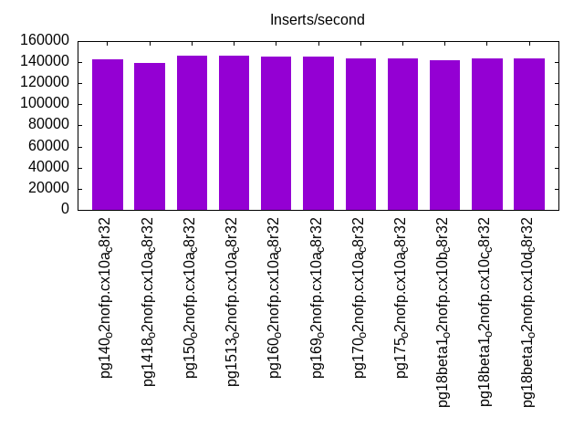
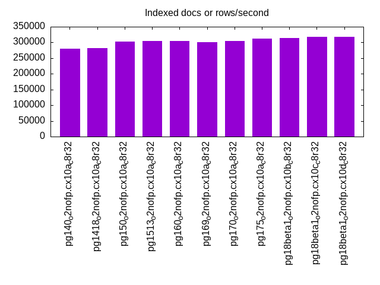
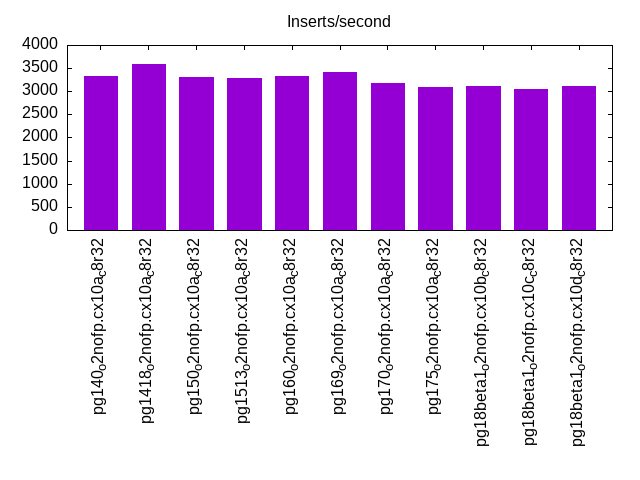
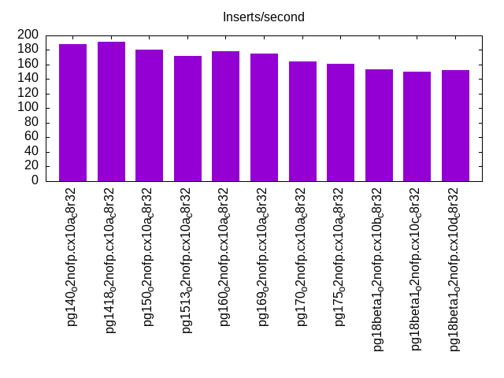
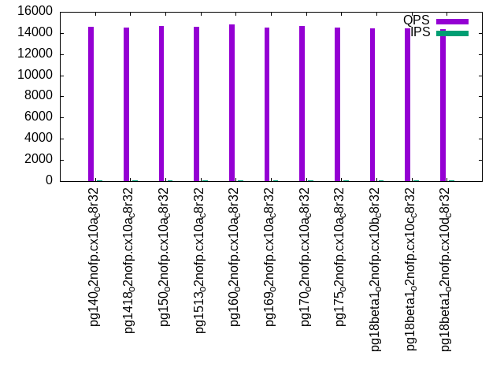
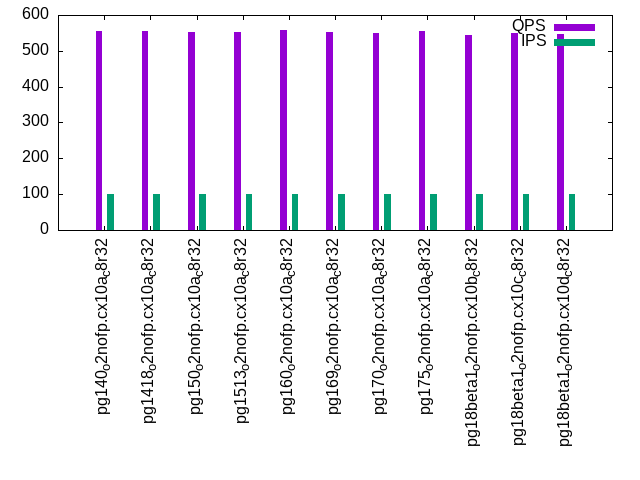
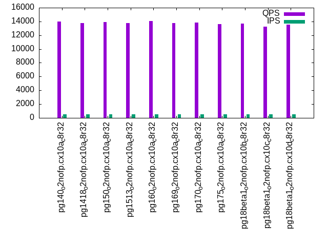
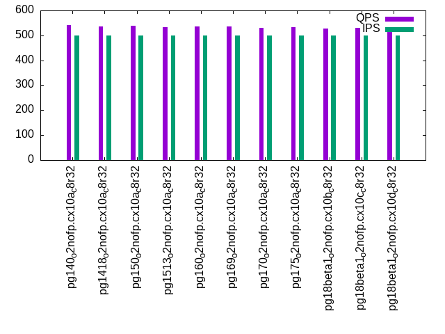
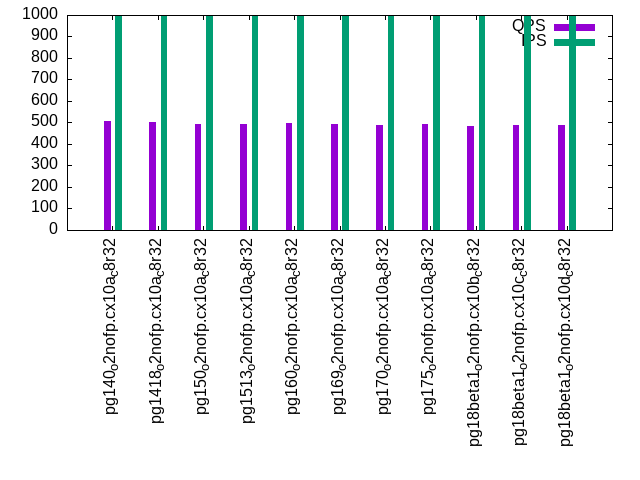

This is a report for the insert benchmark with 800M docs and 1 client(s). It is generated by scripts (bash, awk, sed) and Tufte might not be impressed. An overview of the insert benchmark is here and a short update is here. Below, by DBMS, I mean DBMS+version.config. An example is my8020.c10b40 where my means MySQL, 8020 is version 8.0.20 and c10b40 is the name for the configuration file.
The test server has 8 AMD cores, 32G RAM and an NVMe SSD. It is described here as the PN53. The benchmark was run with 1 client and there were 1 or 3 connections per client (1 for queries or inserts without rate limits, 1+1 for rate limited inserts+deletes). It uses 1 table. It loads 800M rows per table without secondary indexes, creates 3 secondary indexes per table, then inserts 4m+1m rows per table with a delete per insert to avoid growing the table. It then does 6 read+write tests for 1800s each that do queries as fast as possible with 100,100,500,500,1000,1000 inserts/s and the same for deletes/s per client concurrent with the queries. The database is larger than memory. Clients and the DBMS share one server. The per-database configs are in the per-database subdirectories here.
The tested DBMS are:
The numbers are inserts/s for l.i0, l.i1 and l.i2, indexed docs (or rows) /s for l.x and queries/s for qr100, qp100 thru qr1000, qp1000" The values are the average rate over the entire test for inserts (IPS) and queries (QPS). The range of values for IPS and QPS is split into 3 parts: bottom 25%, middle 50%, top 25%. Values in the bottom 25% have a red background, values in the top 25% have a green background and values in the middle have no color. A gray background is used for values that can be ignored because the DBMS did not sustain the target insert rate. Red backgrounds are not used when the minimum value is within 80% of the max value.
| dbms | l.i0 | l.x | l.i1 | l.i2 | qr100 | qp100 | qr500 | qp500 | qr1000 | qp1000 |
|---|---|---|---|---|---|---|---|---|---|---|
| pg140_o2nofp.cx10a_c8r32 | 142883 | 279916 | 3328 | 188 | 14554 | 554 | 13999 | 540 | 12392 | 508 |
| pg1418_o2nofp.cx10a_c8r32 | 139252 | 282087 | 3584 | 191 | 14546 | 554 | 13787 | 537 | 12345 | 501 |
| pg150_o2nofp.cx10a_c8r32 | 146413 | 302801 | 3303 | 180 | 14686 | 553 | 13942 | 538 | 12298 | 495 |
| pg1513_o2nofp.cx10a_c8r32 | 146012 | 304762 | 3279 | 172 | 14568 | 553 | 13735 | 534 | 12093 | 491 |
| pg160_o2nofp.cx10a_c8r32 | 145138 | 304646 | 3322 | 178 | 14794 | 557 | 14082 | 537 | 12433 | 496 |
| pg169_o2nofp.cx10a_c8r32 | 145059 | 300639 | 3413 | 175 | 14487 | 553 | 13749 | 535 | 12097 | 494 |
| pg170_o2nofp.cx10a_c8r32 | 143859 | 304878 | 3185 | 164 | 14674 | 550 | 13867 | 531 | 12161 | 489 |
| pg175_o2nofp.cx10a_c8r32 | 143292 | 311891 | 3101 | 161 | 14537 | 554 | 13638 | 533 | 11970 | 492 |
| pg18beta1_o2nofp.cx10b_c8r32 | 142096 | 314589 | 3113 | 154 | 14471 | 544 | 13730 | 528 | 11830 | 486 |
| pg18beta1_o2nofp.cx10c_c8r32 | 143781 | 318218 | 3056 | 150 | 14408 | 549 | 13255 | 531 | 11753 | 488 |
| pg18beta1_o2nofp.cx10d_c8r32 | 143369 | 317334 | 3122 | 152 | 14375 | 548 | 13512 | 532 | 11647 | 489 |
This table has relative throughput, throughput for the DBMS relative to the DBMS in the first line, using the absolute throughput from the previous table. Values less than 0.95 have a yellow background. Values greater than 1.05 have a blue background.
| dbms | l.i0 | l.x | l.i1 | l.i2 | qr100 | qp100 | qr500 | qp500 | qr1000 | qp1000 |
|---|---|---|---|---|---|---|---|---|---|---|
| pg140_o2nofp.cx10a_c8r32 | 1.00 | 1.00 | 1.00 | 1.00 | 1.00 | 1.00 | 1.00 | 1.00 | 1.00 | 1.00 |
| pg1418_o2nofp.cx10a_c8r32 | 0.97 | 1.01 | 1.08 | 1.02 | 1.00 | 1.00 | 0.98 | 0.99 | 1.00 | 0.99 |
| pg150_o2nofp.cx10a_c8r32 | 1.02 | 1.08 | 0.99 | 0.96 | 1.01 | 1.00 | 1.00 | 1.00 | 0.99 | 0.97 |
| pg1513_o2nofp.cx10a_c8r32 | 1.02 | 1.09 | 0.99 | 0.91 | 1.00 | 1.00 | 0.98 | 0.99 | 0.98 | 0.97 |
| pg160_o2nofp.cx10a_c8r32 | 1.02 | 1.09 | 1.00 | 0.95 | 1.02 | 1.01 | 1.01 | 0.99 | 1.00 | 0.98 |
| pg169_o2nofp.cx10a_c8r32 | 1.02 | 1.07 | 1.03 | 0.93 | 1.00 | 1.00 | 0.98 | 0.99 | 0.98 | 0.97 |
| pg170_o2nofp.cx10a_c8r32 | 1.01 | 1.09 | 0.96 | 0.87 | 1.01 | 0.99 | 0.99 | 0.98 | 0.98 | 0.96 |
| pg175_o2nofp.cx10a_c8r32 | 1.00 | 1.11 | 0.93 | 0.86 | 1.00 | 1.00 | 0.97 | 0.99 | 0.97 | 0.97 |
| pg18beta1_o2nofp.cx10b_c8r32 | 0.99 | 1.12 | 0.94 | 0.82 | 0.99 | 0.98 | 0.98 | 0.98 | 0.95 | 0.96 |
| pg18beta1_o2nofp.cx10c_c8r32 | 1.01 | 1.14 | 0.92 | 0.80 | 0.99 | 0.99 | 0.95 | 0.98 | 0.95 | 0.96 |
| pg18beta1_o2nofp.cx10d_c8r32 | 1.00 | 1.13 | 0.94 | 0.81 | 0.99 | 0.99 | 0.97 | 0.99 | 0.94 | 0.96 |
This lists the average rate of inserts/s for the tests that do inserts concurrent with queries. For such tests the query rate is listed in the table above. The read+write tests are setup so that the insert rate should match the target rate every second. Cells that are not at least 95% of the target have a red background to indicate a failure to satisfy the target.
| dbms | qr100.L1 | qp100.L2 | qr500.L3 | qp500.L4 | qr1000.L5 | qp1000.L6 |
|---|---|---|---|---|---|---|
| pg140_o2nofp.cx10a_c8r32 | 100 | 100 | 500 | 500 | 999 | 999 |
| pg1418_o2nofp.cx10a_c8r32 | 100 | 100 | 500 | 500 | 999 | 999 |
| pg150_o2nofp.cx10a_c8r32 | 100 | 100 | 500 | 500 | 999 | 999 |
| pg1513_o2nofp.cx10a_c8r32 | 100 | 100 | 500 | 500 | 999 | 999 |
| pg160_o2nofp.cx10a_c8r32 | 100 | 100 | 500 | 500 | 999 | 999 |
| pg169_o2nofp.cx10a_c8r32 | 100 | 100 | 500 | 500 | 999 | 999 |
| pg170_o2nofp.cx10a_c8r32 | 100 | 100 | 500 | 500 | 999 | 999 |
| pg175_o2nofp.cx10a_c8r32 | 100 | 100 | 500 | 500 | 999 | 999 |
| pg18beta1_o2nofp.cx10b_c8r32 | 100 | 100 | 500 | 500 | 999 | 999 |
| pg18beta1_o2nofp.cx10c_c8r32 | 100 | 100 | 500 | 500 | 999 | 999 |
| pg18beta1_o2nofp.cx10d_c8r32 | 100 | 100 | 500 | 500 | 999 | 999 |
| target | 100 | 100 | 500 | 500 | 1000 | 1000 |
l.i0: load without secondary indexes. Graphs for performance per 1-second interval are here.
Average throughput:
Insert response time histogram: each cell has the percentage of responses that take <= the time in the header and max is the max response time in seconds. For the max column values in the top 25% of the range have a red background and in the bottom 25% of the range have a green background. The red background is not used when the min value is within 80% of the max value.
| dbms | 256us | 1ms | 4ms | 16ms | 64ms | 256ms | 1s | 4s | 16s | gt | max |
|---|---|---|---|---|---|---|---|---|---|---|---|
| pg140_o2nofp.cx10a_c8r32 | 99.973 | 0.024 | 0.003 | nonzero | 0.036 | ||||||
| pg1418_o2nofp.cx10a_c8r32 | 99.964 | 0.031 | 0.004 | 0.001 | nonzero | 0.068 | |||||
| pg150_o2nofp.cx10a_c8r32 | 99.974 | 0.021 | 0.003 | 0.002 | nonzero | 0.068 | |||||
| pg1513_o2nofp.cx10a_c8r32 | 99.972 | 0.023 | 0.003 | 0.002 | 0.062 | ||||||
| pg160_o2nofp.cx10a_c8r32 | 99.972 | 0.023 | 0.003 | 0.002 | 0.058 | ||||||
| pg169_o2nofp.cx10a_c8r32 | 99.973 | 0.022 | 0.003 | 0.001 | nonzero | 0.067 | |||||
| pg170_o2nofp.cx10a_c8r32 | 99.971 | 0.024 | 0.004 | 0.002 | nonzero | 0.065 | |||||
| pg175_o2nofp.cx10a_c8r32 | 99.970 | 0.024 | 0.004 | 0.002 | 0.054 | ||||||
| pg18beta1_o2nofp.cx10b_c8r32 | 99.872 | 0.118 | 0.010 | 0.001 | 0.048 | ||||||
| pg18beta1_o2nofp.cx10c_c8r32 | 99.968 | 0.026 | 0.005 | 0.001 | 0.046 | ||||||
| pg18beta1_o2nofp.cx10d_c8r32 | 99.967 | 0.026 | 0.006 | 0.001 | 0.046 |
Performance metrics for the DBMS listed above. Some are normalized by throughput, others are not. Legend for results is here.
ips qps rps rmbps wps wmbps rpq rkbpq wpi wkbpi csps cpups cspq cpupq dbgb1 dbgb2 rss maxop p50 p99 tag 142883 0 24 0.2 533.5 58.6 0.000 0.001 0.004 0.420 16740 20.5 0.117 11 76.5 116.6 2.9 0.036 143680 139184 pg140_o2nofp.cx10a_c8r32 139252 0 25 0.2 522.0 57.4 0.000 0.001 0.004 0.422 16351 20.2 0.117 12 76.5 116.6 3.5 0.068 139979 136086 pg1418_o2nofp.cx10a_c8r32 146413 0 27 0.2 548.6 60.2 0.000 0.001 0.004 0.421 17086 20.5 0.117 11 76.5 116.6 2.9 0.068 147282 142983 pg150_o2nofp.cx10a_c8r32 146012 0 27 0.2 547.8 60.1 0.000 0.001 0.004 0.421 17004 20.6 0.116 11 76.5 116.6 18.8 0.062 146781 142483 pg1513_o2nofp.cx10a_c8r32 145138 0 27 0.2 544.9 59.8 0.000 0.001 0.004 0.422 16933 20.5 0.117 11 76.5 116.6 1.8 0.058 146083 141384 pg160_o2nofp.cx10a_c8r32 145059 0 27 0.2 543.7 59.6 0.000 0.001 0.004 0.421 16930 20.6 0.117 11 76.5 116.6 18.6 0.067 145883 141881 pg169_o2nofp.cx10a_c8r32 143859 0 25 0.2 538.8 59.4 0.000 0.001 0.004 0.423 14349 20.5 0.100 11 76.5 116.6 19.3 0.065 144779 140680 pg170_o2nofp.cx10a_c8r32 143292 0 25 0.2 536.9 59.1 0.000 0.001 0.004 0.422 14293 20.4 0.100 11 76.5 116.6 18.9 0.054 144180 140280 pg175_o2nofp.cx10a_c8r32 142096 0 24 0.2 530.5 58.5 0.000 0.001 0.004 0.421 14382 20.5 0.101 12 76.5 116.6 18.8 0.048 142981 124583 pg18beta1_o2nofp.cx10b_c8r32 143781 0 26 0.2 539.4 59.3 0.000 0.001 0.004 0.422 14449 20.5 0.100 11 76.5 116.6 18.9 0.046 144684 140280 pg18beta1_o2nofp.cx10c_c8r32 143369 0 25 0.2 539.7 59.4 0.000 0.001 0.004 0.424 14383 20.4 0.100 11 76.5 116.6 18.3 0.046 144380 139878 pg18beta1_o2nofp.cx10d_c8r32
l.x: create secondary indexes.
Average throughput:
Performance metrics for the DBMS listed above. Some are normalized by throughput, others are not. Legend for results is here.
ips qps rps rmbps wps wmbps rpq rkbpq wpi wkbpi csps cpups cspq cpupq dbgb1 dbgb2 rss maxop p50 p99 tag 279916 0 741 91.9 850.7 102.1 0.003 0.336 0.003 0.374 369 13.0 0.001 4 153.6 193.7 23.4 0.004 NA NA pg140_o2nofp.cx10a_c8r32 282087 0 746 92.6 874.7 103.2 0.003 0.336 0.003 0.375 390 12.8 0.001 4 153.6 193.7 1.9 0.003 NA NA pg1418_o2nofp.cx10a_c8r32 302801 0 824 102.1 951.8 113.2 0.003 0.345 0.003 0.383 413 12.9 0.001 3 153.6 193.7 23.4 0.006 NA NA pg150_o2nofp.cx10a_c8r32 304762 0 829 102.7 951.8 113.7 0.003 0.345 0.003 0.382 420 13.0 0.001 3 153.6 193.7 23.4 0.004 NA NA pg1513_o2nofp.cx10a_c8r32 304646 0 827 102.6 951.9 114.0 0.003 0.345 0.003 0.383 429 12.9 0.001 3 153.6 193.7 23.5 0.005 NA NA pg160_o2nofp.cx10a_c8r32 300639 0 816 101.2 941.0 112.4 0.003 0.345 0.003 0.383 422 12.9 0.001 3 153.6 193.7 23.5 0.007 NA NA pg169_o2nofp.cx10a_c8r32 304878 0 826 102.7 969.5 113.9 0.003 0.345 0.003 0.382 354 13.0 0.001 3 153.6 193.7 23.4 0.004 NA NA pg170_o2nofp.cx10a_c8r32 311891 0 845 105.0 989.8 116.4 0.003 0.345 0.003 0.382 423 13.0 0.001 3 153.6 193.7 23.4 0.004 NA NA pg175_o2nofp.cx10a_c8r32 314589 0 852 105.9 997.5 117.2 0.003 0.345 0.003 0.381 426 13.0 0.001 3 153.6 193.7 23.4 0.005 NA NA pg18beta1_o2nofp.cx10b_c8r32 318218 0 862 107.1 994.0 118.5 0.003 0.345 0.003 0.381 1258 13.5 0.004 3 153.6 193.7 23.4 0.005 NA NA pg18beta1_o2nofp.cx10c_c8r32 317334 0 860 106.8 1006.2 118.2 0.003 0.345 0.003 0.381 1010 13.4 0.003 3 153.6 193.7 23.4 0.005 NA NA pg18beta1_o2nofp.cx10d_c8r32
l.i1: continue load after secondary indexes created with 50 inserts per transaction. Graphs for performance per 1-second interval are here.
Average throughput:
Insert response time histogram: each cell has the percentage of responses that take <= the time in the header and max is the max response time in seconds. For the max column values in the top 25% of the range have a red background and in the bottom 25% of the range have a green background. The red background is not used when the min value is within 80% of the max value.
| dbms | 256us | 1ms | 4ms | 16ms | 64ms | 256ms | 1s | 4s | 16s | gt | max |
|---|---|---|---|---|---|---|---|---|---|---|---|
| pg140_o2nofp.cx10a_c8r32 | 99.141 | 0.859 | 0.040 | ||||||||
| pg1418_o2nofp.cx10a_c8r32 | 98.228 | 1.773 | 0.050 | ||||||||
| pg150_o2nofp.cx10a_c8r32 | 98.445 | 1.555 | 0.051 | ||||||||
| pg1513_o2nofp.cx10a_c8r32 | 98.495 | 1.505 | 0.051 | ||||||||
| pg160_o2nofp.cx10a_c8r32 | 98.306 | 1.694 | 0.063 | ||||||||
| pg169_o2nofp.cx10a_c8r32 | 98.171 | 1.829 | 0.050 | ||||||||
| pg170_o2nofp.cx10a_c8r32 | 98.460 | 1.540 | 0.056 | ||||||||
| pg175_o2nofp.cx10a_c8r32 | 98.621 | 1.379 | 0.051 | ||||||||
| pg18beta1_o2nofp.cx10b_c8r32 | 98.572 | 1.427 | 0.058 | ||||||||
| pg18beta1_o2nofp.cx10c_c8r32 | 98.595 | 1.405 | 0.052 | ||||||||
| pg18beta1_o2nofp.cx10d_c8r32 | 98.454 | 1.546 | 0.053 |
Delete response time histogram: each cell has the percentage of responses that take <= the time in the header and max is the max response time in seconds. For the max column values in the top 25% of the range have a red background and in the bottom 25% of the range have a green background. The red background is not used when the min value is within 80% of the max value.
| dbms | 256us | 1ms | 4ms | 16ms | 64ms | 256ms | 1s | 4s | 16s | gt | max |
|---|---|---|---|---|---|---|---|---|---|---|---|
| pg140_o2nofp.cx10a_c8r32 | 0.948 | 16.205 | 48.483 | 34.365 | 0.032 | ||||||
| pg1418_o2nofp.cx10a_c8r32 | 0.694 | 16.674 | 51.007 | 31.625 | 0.026 | ||||||
| pg150_o2nofp.cx10a_c8r32 | 0.925 | 16.414 | 43.359 | 39.303 | 0.033 | ||||||
| pg1513_o2nofp.cx10a_c8r32 | 0.596 | 16.069 | 44.196 | 39.139 | 0.029 | ||||||
| pg160_o2nofp.cx10a_c8r32 | 0.759 | 16.980 | 48.265 | 33.996 | 0.031 | ||||||
| pg169_o2nofp.cx10a_c8r32 | 0.514 | 16.799 | 48.193 | 34.495 | 0.033 | ||||||
| pg170_o2nofp.cx10a_c8r32 | 0.476 | 15.313 | 43.139 | 41.072 | 0.034 | ||||||
| pg175_o2nofp.cx10a_c8r32 | 0.517 | 15.865 | 41.474 | 42.144 | 0.033 | ||||||
| pg18beta1_o2nofp.cx10b_c8r32 | 0.434 | 15.422 | 41.789 | 42.355 | 0.038 | ||||||
| pg18beta1_o2nofp.cx10c_c8r32 | 0.407 | 15.585 | 41.459 | 42.549 | 0.037 | ||||||
| pg18beta1_o2nofp.cx10d_c8r32 | 0.771 | 15.543 | 40.509 | 43.178 | 0.031 |
Performance metrics for the DBMS listed above. Some are normalized by throughput, others are not. Legend for results is here.
ips qps rps rmbps wps wmbps rpq rkbpq wpi wkbpi csps cpups cspq cpupq dbgb1 dbgb2 rss maxop p50 p99 tag 3328 0 4784 37.9 3986.1 68.4 1.438 11.655 1.198 21.039 10999 14.6 3.305 351 154.3 194.3 23.0 0.040 3250 2000 pg140_o2nofp.cx10a_c8r32 3584 0 5149 40.8 4244.1 72.6 1.437 11.644 1.184 20.742 11797 15.4 3.291 344 154.3 194.3 23.0 0.050 3400 2150 pg1418_o2nofp.cx10a_c8r32 3303 0 4746 37.6 3943.5 67.5 1.437 11.650 1.194 20.915 10836 15.1 3.281 366 154.3 194.3 22.8 0.051 2800 1800 pg150_o2nofp.cx10a_c8r32 3279 0 4722 37.4 3920.1 67.0 1.440 11.678 1.196 20.924 10787 15.1 3.290 368 154.3 194.3 22.8 0.051 2750 1950 pg1513_o2nofp.cx10a_c8r32 3322 0 4778 37.8 3957.3 67.6 1.438 11.661 1.191 20.826 10910 15.1 3.284 364 154.3 194.3 22.9 0.063 3149 1800 pg160_o2nofp.cx10a_c8r32 3413 0 4907 38.8 4078.6 69.7 1.438 11.656 1.195 20.924 11188 15.3 3.278 359 154.3 194.3 22.8 0.050 3150 2000 pg169_o2nofp.cx10a_c8r32 3185 0 4574 36.2 3770.8 64.5 1.436 11.645 1.184 20.732 10315 15.0 3.239 377 154.3 194.3 22.8 0.056 2850 1800 pg170_o2nofp.cx10a_c8r32 3101 0 4484 35.5 3687.9 63.0 1.446 11.724 1.189 20.803 10040 14.8 3.238 382 154.3 194.3 22.7 0.051 2499 1800 pg175_o2nofp.cx10a_c8r32 3113 0 4482 35.5 3723.1 63.7 1.440 11.677 1.196 20.949 10086 15.0 3.240 386 154.3 194.3 22.8 0.058 2699 1750 pg18beta1_o2nofp.cx10b_c8r32 3056 0 4395 34.8 3638.7 62.2 1.438 11.659 1.191 20.837 9891 14.9 3.237 390 154.3 194.3 22.8 0.052 2750 1550 pg18beta1_o2nofp.cx10c_c8r32 3122 0 4488 35.5 3706.7 63.2 1.437 11.652 1.187 20.719 10135 14.9 3.246 382 154.3 194.3 23.1 0.053 2750 1800 pg18beta1_o2nofp.cx10d_c8r32
l.i2: continue load after secondary indexes created with 5 inserts per transaction. Graphs for performance per 1-second interval are here.
Average throughput:
Insert response time histogram: each cell has the percentage of responses that take <= the time in the header and max is the max response time in seconds. For the max column values in the top 25% of the range have a red background and in the bottom 25% of the range have a green background. The red background is not used when the min value is within 80% of the max value.
| dbms | 256us | 1ms | 4ms | 16ms | 64ms | 256ms | 1s | 4s | 16s | gt | max |
|---|---|---|---|---|---|---|---|---|---|---|---|
| pg140_o2nofp.cx10a_c8r32 | 18.306 | 81.671 | 0.024 | 0.009 | |||||||
| pg1418_o2nofp.cx10a_c8r32 | 10.579 | 89.237 | 0.177 | 0.007 | 0.040 | ||||||
| pg150_o2nofp.cx10a_c8r32 | 9.624 | 90.148 | 0.222 | 0.006 | 0.033 | ||||||
| pg1513_o2nofp.cx10a_c8r32 | 9.486 | 90.293 | 0.214 | 0.007 | 0.025 | ||||||
| pg160_o2nofp.cx10a_c8r32 | 9.582 | 90.219 | 0.190 | 0.008 | 0.026 | ||||||
| pg169_o2nofp.cx10a_c8r32 | 8.271 | 91.435 | 0.285 | 0.009 | 0.022 | ||||||
| pg170_o2nofp.cx10a_c8r32 | 10.113 | 89.838 | 0.042 | 0.006 | 0.039 | ||||||
| pg175_o2nofp.cx10a_c8r32 | 10.543 | 89.402 | 0.052 | 0.003 | 0.024 | ||||||
| pg18beta1_o2nofp.cx10b_c8r32 | 10.913 | 89.043 | 0.040 | 0.003 | 0.029 | ||||||
| pg18beta1_o2nofp.cx10c_c8r32 | 10.680 | 89.263 | 0.053 | 0.003 | 0.020 | ||||||
| pg18beta1_o2nofp.cx10d_c8r32 | 10.260 | 89.691 | 0.046 | 0.003 | 0.020 |
Delete response time histogram: each cell has the percentage of responses that take <= the time in the header and max is the max response time in seconds. For the max column values in the top 25% of the range have a red background and in the bottom 25% of the range have a green background. The red background is not used when the min value is within 80% of the max value.
| dbms | 256us | 1ms | 4ms | 16ms | 64ms | 256ms | 1s | 4s | 16s | gt | max |
|---|---|---|---|---|---|---|---|---|---|---|---|
| pg140_o2nofp.cx10a_c8r32 | 99.999 | 0.001 | 0.102 | ||||||||
| pg1418_o2nofp.cx10a_c8r32 | 99.999 | 0.001 | 0.102 | ||||||||
| pg150_o2nofp.cx10a_c8r32 | 99.999 | 0.001 | 0.097 | ||||||||
| pg1513_o2nofp.cx10a_c8r32 | 99.999 | 0.001 | 0.103 | ||||||||
| pg160_o2nofp.cx10a_c8r32 | 99.999 | 0.001 | 0.099 | ||||||||
| pg169_o2nofp.cx10a_c8r32 | 99.999 | 0.001 | 0.099 | ||||||||
| pg170_o2nofp.cx10a_c8r32 | 99.999 | 0.001 | 0.097 | ||||||||
| pg175_o2nofp.cx10a_c8r32 | 99.999 | 0.001 | 0.098 | ||||||||
| pg18beta1_o2nofp.cx10b_c8r32 | 99.999 | 0.001 | 0.108 | ||||||||
| pg18beta1_o2nofp.cx10c_c8r32 | 99.999 | 0.001 | 0.104 | ||||||||
| pg18beta1_o2nofp.cx10d_c8r32 | 99.999 | 0.001 | 0.105 |
Performance metrics for the DBMS listed above. Some are normalized by throughput, others are not. Legend for results is here.
ips qps rps rmbps wps wmbps rpq rkbpq wpi wkbpi csps cpups cspq cpupq dbgb1 dbgb2 rss maxop p50 p99 tag 188 0 207 1.7 543.1 7.4 1.101 8.996 2.883 40.358 1465 12.9 7.779 5478 154.5 194.5 23.3 0.009 190 160 pg140_o2nofp.cx10a_c8r32 191 0 204 1.6 554.1 7.5 1.072 8.760 2.906 40.311 1478 12.9 7.752 5412 154.5 194.5 23.3 0.040 190 165 pg1418_o2nofp.cx10a_c8r32 180 0 193 1.5 515.5 7.2 1.071 8.761 2.859 40.760 1338 12.8 7.419 5679 154.4 194.5 23.3 0.033 180 150 pg150_o2nofp.cx10a_c8r32 172 0 184 1.5 497.1 6.9 1.072 8.770 2.895 41.339 1286 12.7 7.491 5917 154.4 194.5 23.3 0.025 170 145 pg1513_o2nofp.cx10a_c8r32 178 0 190 1.5 513.6 7.1 1.071 8.765 2.893 41.201 1321 12.8 7.445 5769 154.4 194.5 23.3 0.026 180 135 pg160_o2nofp.cx10a_c8r32 175 0 187 1.5 505.9 7.0 1.071 8.764 2.894 41.031 1308 12.8 7.484 5858 154.4 194.5 23.3 0.022 175 140 pg169_o2nofp.cx10a_c8r32 164 0 175 1.4 482.2 6.7 1.071 8.763 2.948 41.752 1117 12.7 6.826 6210 154.5 194.5 23.4 0.039 160 140 pg170_o2nofp.cx10a_c8r32 161 0 173 1.4 477.5 6.6 1.072 8.770 2.958 42.056 1109 12.7 6.872 6295 154.4 194.5 23.4 0.024 160 125 pg175_o2nofp.cx10a_c8r32 154 0 165 1.3 448.5 6.3 1.074 8.789 2.918 41.840 1058 12.7 6.882 6610 154.5 191.5 23.3 0.029 155 120 pg18beta1_o2nofp.cx10b_c8r32 150 0 161 1.3 440.9 6.2 1.072 8.762 2.930 42.203 1047 12.7 6.954 6751 154.5 191.5 23.4 0.020 150 135 pg18beta1_o2nofp.cx10c_c8r32 152 0 163 1.3 443.6 6.2 1.072 8.767 2.924 41.936 1047 12.7 6.902 6697 154.5 191.6 23.4 0.020 150 120 pg18beta1_o2nofp.cx10d_c8r32
qr100.L1: range queries with 100 insert/s per client. Graphs for performance per 1-second interval are here.
Average throughput:
Query response time histogram: each cell has the percentage of responses that take <= the time in the header and max is the max response time in seconds. For max values in the top 25% of the range have a red background and in the bottom 25% of the range have a green background. The red background is not used when the min value is within 80% of the max value.
| dbms | 256us | 1ms | 4ms | 16ms | 64ms | 256ms | 1s | 4s | 16s | gt | max |
|---|---|---|---|---|---|---|---|---|---|---|---|
| pg140_o2nofp.cx10a_c8r32 | 99.997 | 0.003 | nonzero | nonzero | 0.009 | ||||||
| pg1418_o2nofp.cx10a_c8r32 | 99.997 | 0.003 | nonzero | nonzero | 0.009 | ||||||
| pg150_o2nofp.cx10a_c8r32 | 99.996 | 0.003 | nonzero | nonzero | 0.010 | ||||||
| pg1513_o2nofp.cx10a_c8r32 | 99.997 | 0.003 | nonzero | nonzero | 0.009 | ||||||
| pg160_o2nofp.cx10a_c8r32 | 99.996 | 0.004 | nonzero | nonzero | 0.009 | ||||||
| pg169_o2nofp.cx10a_c8r32 | 99.996 | 0.003 | nonzero | nonzero | 0.009 | ||||||
| pg170_o2nofp.cx10a_c8r32 | 99.997 | 0.003 | nonzero | nonzero | 0.009 | ||||||
| pg175_o2nofp.cx10a_c8r32 | 99.997 | 0.003 | nonzero | nonzero | 0.010 | ||||||
| pg18beta1_o2nofp.cx10b_c8r32 | 99.996 | 0.004 | nonzero | nonzero | 0.010 | ||||||
| pg18beta1_o2nofp.cx10c_c8r32 | 99.996 | 0.003 | nonzero | nonzero | 0.009 | ||||||
| pg18beta1_o2nofp.cx10d_c8r32 | 99.996 | 0.003 | nonzero | nonzero | 0.011 |
Insert response time histogram: each cell has the percentage of responses that take <= the time in the header and max is the max response time in seconds. For max values in the top 25% of the range have a red background and in the bottom 25% of the range have a green background. The red background is not used when the min value is within 80% of the max value.
| dbms | 256us | 1ms | 4ms | 16ms | 64ms | 256ms | 1s | 4s | 16s | gt | max |
|---|---|---|---|---|---|---|---|---|---|---|---|
| pg140_o2nofp.cx10a_c8r32 | 61.139 | 38.861 | 0.024 | ||||||||
| pg1418_o2nofp.cx10a_c8r32 | 60.306 | 39.694 | 0.025 | ||||||||
| pg150_o2nofp.cx10a_c8r32 | 56.333 | 43.667 | 0.025 | ||||||||
| pg1513_o2nofp.cx10a_c8r32 | 56.222 | 43.778 | 0.025 | ||||||||
| pg160_o2nofp.cx10a_c8r32 | 55.611 | 44.389 | 0.025 | ||||||||
| pg169_o2nofp.cx10a_c8r32 | 56.222 | 43.778 | 0.024 | ||||||||
| pg170_o2nofp.cx10a_c8r32 | 59.639 | 40.361 | 0.025 | ||||||||
| pg175_o2nofp.cx10a_c8r32 | 59.694 | 40.306 | 0.026 | ||||||||
| pg18beta1_o2nofp.cx10b_c8r32 | 60.139 | 39.861 | 0.026 | ||||||||
| pg18beta1_o2nofp.cx10c_c8r32 | 59.861 | 40.139 | 0.027 | ||||||||
| pg18beta1_o2nofp.cx10d_c8r32 | 60.306 | 39.694 | 0.025 |
Delete response time histogram: each cell has the percentage of responses that take <= the time in the header and max is the max response time in seconds. For max values in the top 25% of the range have a red background and in the bottom 25% of the range have a green background. The red background is not used when the min value is within 80% of the max value.
| dbms | 256us | 1ms | 4ms | 16ms | 64ms | 256ms | 1s | 4s | 16s | gt | max |
|---|---|---|---|---|---|---|---|---|---|---|---|
| pg140_o2nofp.cx10a_c8r32 | 52.722 | 47.250 | 0.028 | 0.010 | |||||||
| pg1418_o2nofp.cx10a_c8r32 | 50.194 | 49.750 | 0.056 | 0.010 | |||||||
| pg150_o2nofp.cx10a_c8r32 | 49.083 | 50.861 | 0.056 | 0.010 | |||||||
| pg1513_o2nofp.cx10a_c8r32 | 54.194 | 45.750 | 0.056 | 0.010 | |||||||
| pg160_o2nofp.cx10a_c8r32 | 48.000 | 51.944 | 0.056 | 0.010 | |||||||
| pg169_o2nofp.cx10a_c8r32 | 41.444 | 58.500 | 0.056 | 0.010 | |||||||
| pg170_o2nofp.cx10a_c8r32 | 43.472 | 56.472 | 0.056 | 0.010 | |||||||
| pg175_o2nofp.cx10a_c8r32 | 39.444 | 60.500 | 0.056 | 0.010 | |||||||
| pg18beta1_o2nofp.cx10b_c8r32 | 42.528 | 57.417 | 0.056 | 0.010 | |||||||
| pg18beta1_o2nofp.cx10c_c8r32 | 40.889 | 59.056 | 0.056 | 0.010 | |||||||
| pg18beta1_o2nofp.cx10d_c8r32 | 42.056 | 57.889 | 0.056 | 0.010 |
Performance metrics for the DBMS listed above. Some are normalized by throughput, others are not. Legend for results is here.
ips qps rps rmbps wps wmbps rpq rkbpq wpi wkbpi csps cpups cspq cpupq dbgb1 dbgb2 rss maxop p50 p99 tag 100 14554 112 0.9 57.0 1.8 0.008 0.066 0.570 18.474 55844 12.5 3.837 69 154.5 191.8 23.3 0.009 14574 14270 pg140_o2nofp.cx10a_c8r32 100 14546 111 0.9 48.4 1.7 0.008 0.065 0.484 17.756 55812 12.4 3.837 68 154.5 192.0 23.3 0.009 14542 14286 pg1418_o2nofp.cx10a_c8r32 100 14686 111 0.9 45.0 1.7 0.008 0.065 0.450 17.442 56352 12.5 3.837 68 154.5 191.8 23.3 0.010 14686 14302 pg150_o2nofp.cx10a_c8r32 100 14568 111 0.9 45.1 1.7 0.008 0.065 0.451 17.443 55851 12.5 3.834 69 154.5 192.0 23.3 0.009 14558 14302 pg1513_o2nofp.cx10a_c8r32 100 14794 112 0.9 41.2 1.7 0.008 0.064 0.412 17.109 56711 12.4 3.833 67 154.5 192.1 23.3 0.009 14798 14510 pg160_o2nofp.cx10a_c8r32 100 14487 111 0.9 45.0 1.7 0.008 0.066 0.451 17.454 55575 12.5 3.836 69 154.5 191.7 23.3 0.009 14510 14222 pg169_o2nofp.cx10a_c8r32 100 14674 111 0.9 65.0 1.9 0.008 0.065 0.650 19.247 56248 12.5 3.833 68 154.5 191.7 23.4 0.009 14654 14445 pg170_o2nofp.cx10a_c8r32 100 14537 112 0.9 61.8 1.9 0.008 0.065 0.618 18.992 55729 12.5 3.833 69 154.5 193.7 23.4 0.010 14510 14254 pg175_o2nofp.cx10a_c8r32 100 14471 112 0.9 65.1 1.9 0.008 0.064 0.652 19.293 55511 12.6 3.836 70 154.5 189.9 23.3 0.010 14493 14190 pg18beta1_o2nofp.cx10b_c8r32 100 14408 112 0.9 66.7 1.9 0.008 0.064 0.667 19.398 55238 12.6 3.834 70 154.5 191.3 23.4 0.009 14398 14142 pg18beta1_o2nofp.cx10c_c8r32 100 14375 111 0.9 66.4 1.9 0.008 0.065 0.665 19.412 55145 12.6 3.836 70 154.5 190.1 23.4 0.011 14398 14078 pg18beta1_o2nofp.cx10d_c8r32
qp100.L2: point queries with 100 insert/s per client. Graphs for performance per 1-second interval are here.
Average throughput:
Query response time histogram: each cell has the percentage of responses that take <= the time in the header and max is the max response time in seconds. For max values in the top 25% of the range have a red background and in the bottom 25% of the range have a green background. The red background is not used when the min value is within 80% of the max value.
| dbms | 256us | 1ms | 4ms | 16ms | 64ms | 256ms | 1s | 4s | 16s | gt | max |
|---|---|---|---|---|---|---|---|---|---|---|---|
| pg140_o2nofp.cx10a_c8r32 | 0.844 | 99.146 | 0.009 | 0.007 | |||||||
| pg1418_o2nofp.cx10a_c8r32 | 0.852 | 99.139 | 0.009 | 0.015 | |||||||
| pg150_o2nofp.cx10a_c8r32 | 0.840 | 99.150 | 0.010 | 0.015 | |||||||
| pg1513_o2nofp.cx10a_c8r32 | 0.847 | 99.138 | 0.015 | 0.007 | |||||||
| pg160_o2nofp.cx10a_c8r32 | 0.878 | 99.112 | 0.009 | 0.007 | |||||||
| pg169_o2nofp.cx10a_c8r32 | 0.835 | 99.155 | 0.010 | 0.006 | |||||||
| pg170_o2nofp.cx10a_c8r32 | 0.807 | 99.182 | 0.011 | 0.007 | |||||||
| pg175_o2nofp.cx10a_c8r32 | 0.820 | 99.169 | 0.010 | 0.007 | |||||||
| pg18beta1_o2nofp.cx10b_c8r32 | 0.736 | 99.252 | 0.012 | 0.014 | |||||||
| pg18beta1_o2nofp.cx10c_c8r32 | 0.782 | 99.209 | 0.010 | 0.007 | |||||||
| pg18beta1_o2nofp.cx10d_c8r32 | 0.752 | 99.238 | 0.010 | 0.015 |
Insert response time histogram: each cell has the percentage of responses that take <= the time in the header and max is the max response time in seconds. For max values in the top 25% of the range have a red background and in the bottom 25% of the range have a green background. The red background is not used when the min value is within 80% of the max value.
| dbms | 256us | 1ms | 4ms | 16ms | 64ms | 256ms | 1s | 4s | 16s | gt | max |
|---|---|---|---|---|---|---|---|---|---|---|---|
| pg140_o2nofp.cx10a_c8r32 | 94.889 | 5.111 | 0.018 | ||||||||
| pg1418_o2nofp.cx10a_c8r32 | 92.944 | 7.056 | 0.024 | ||||||||
| pg150_o2nofp.cx10a_c8r32 | 93.278 | 6.722 | 0.023 | ||||||||
| pg1513_o2nofp.cx10a_c8r32 | 93.639 | 6.361 | 0.020 | ||||||||
| pg160_o2nofp.cx10a_c8r32 | 94.639 | 5.361 | 0.020 | ||||||||
| pg169_o2nofp.cx10a_c8r32 | 94.778 | 5.222 | 0.021 | ||||||||
| pg170_o2nofp.cx10a_c8r32 | 99.611 | 0.389 | 0.020 | ||||||||
| pg175_o2nofp.cx10a_c8r32 | 99.528 | 0.472 | 0.019 | ||||||||
| pg18beta1_o2nofp.cx10b_c8r32 | 99.278 | 0.722 | 0.025 | ||||||||
| pg18beta1_o2nofp.cx10c_c8r32 | 99.472 | 0.528 | 0.020 | ||||||||
| pg18beta1_o2nofp.cx10d_c8r32 | 99.361 | 0.639 | 0.024 |
Delete response time histogram: each cell has the percentage of responses that take <= the time in the header and max is the max response time in seconds. For max values in the top 25% of the range have a red background and in the bottom 25% of the range have a green background. The red background is not used when the min value is within 80% of the max value.
| dbms | 256us | 1ms | 4ms | 16ms | 64ms | 256ms | 1s | 4s | 16s | gt | max |
|---|---|---|---|---|---|---|---|---|---|---|---|
| pg140_o2nofp.cx10a_c8r32 | 0.167 | 99.806 | 0.028 | 0.009 | |||||||
| pg1418_o2nofp.cx10a_c8r32 | 99.972 | 0.028 | 0.009 | ||||||||
| pg150_o2nofp.cx10a_c8r32 | 0.056 | 99.917 | 0.028 | 0.009 | |||||||
| pg1513_o2nofp.cx10a_c8r32 | 0.278 | 99.694 | 0.028 | 0.009 | |||||||
| pg160_o2nofp.cx10a_c8r32 | 0.111 | 99.833 | 0.056 | 0.009 | |||||||
| pg169_o2nofp.cx10a_c8r32 | 0.056 | 99.917 | 0.028 | 0.009 | |||||||
| pg170_o2nofp.cx10a_c8r32 | 99.806 | 0.194 | 0.008 | ||||||||
| pg175_o2nofp.cx10a_c8r32 | 99.972 | 0.028 | 0.009 | ||||||||
| pg18beta1_o2nofp.cx10b_c8r32 | 98.583 | 1.417 | 0.009 | ||||||||
| pg18beta1_o2nofp.cx10c_c8r32 | 99.944 | 0.056 | 0.009 | ||||||||
| pg18beta1_o2nofp.cx10d_c8r32 | 99.944 | 0.056 | 0.009 |
Performance metrics for the DBMS listed above. Some are normalized by throughput, others are not. Legend for results is here.
ips qps rps rmbps wps wmbps rpq rkbpq wpi wkbpi csps cpups cspq cpupq dbgb1 dbgb2 rss maxop p50 p99 tag 100 554 7196 56.6 360.9 4.2 12.999 104.616 3.613 42.776 16071 3.5 29.030 506 154.5 191.8 23.3 0.007 576 368 pg140_o2nofp.cx10a_c8r32 100 554 7209 56.7 369.4 4.2 13.008 104.699 3.698 43.483 16100 3.5 29.052 505 154.5 192.0 23.3 0.015 576 368 pg1418_o2nofp.cx10a_c8r32 100 553 7196 56.6 368.5 4.2 13.011 104.759 3.689 43.366 16014 3.4 28.954 492 154.5 191.8 23.3 0.015 576 368 pg150_o2nofp.cx10a_c8r32 100 553 7191 56.5 368.7 4.2 13.000 104.689 3.687 43.339 16004 3.4 28.935 492 154.5 192.0 23.3 0.007 576 352 pg1513_o2nofp.cx10a_c8r32 100 557 7237 56.9 372.9 4.3 12.997 104.645 3.729 43.689 16100 3.4 28.915 489 154.5 192.1 23.3 0.007 592 368 pg160_o2nofp.cx10a_c8r32 100 553 7191 56.5 368.4 4.2 13.010 104.754 3.688 43.362 15998 3.5 28.945 507 154.5 191.7 23.3 0.006 576 368 pg169_o2nofp.cx10a_c8r32 100 550 7158 56.3 345.8 4.1 13.010 104.720 3.458 41.558 16248 4.2 29.530 611 154.5 191.7 23.4 0.007 576 368 pg170_o2nofp.cx10a_c8r32 100 554 7196 56.6 349.0 4.1 12.998 104.655 3.490 41.801 16000 3.5 28.902 506 154.5 193.7 23.4 0.007 576 368 pg175_o2nofp.cx10a_c8r32 100 544 7113 55.9 345.9 4.1 13.087 105.406 3.463 41.606 15805 3.6 29.079 530 154.5 189.9 23.3 0.014 576 352 pg18beta1_o2nofp.cx10b_c8r32 100 549 7138 56.1 344.1 4.0 13.002 104.667 3.441 41.414 15871 3.6 28.908 525 154.5 191.3 23.4 0.007 576 368 pg18beta1_o2nofp.cx10c_c8r32 100 548 7132 56.1 345.1 4.1 13.012 104.772 3.454 41.534 15861 3.6 28.939 525 154.5 190.1 23.4 0.015 576 368 pg18beta1_o2nofp.cx10d_c8r32
qr500.L3: range queries with 500 insert/s per client. Graphs for performance per 1-second interval are here.
Average throughput:
Query response time histogram: each cell has the percentage of responses that take <= the time in the header and max is the max response time in seconds. For max values in the top 25% of the range have a red background and in the bottom 25% of the range have a green background. The red background is not used when the min value is within 80% of the max value.
| dbms | 256us | 1ms | 4ms | 16ms | 64ms | 256ms | 1s | 4s | 16s | gt | max |
|---|---|---|---|---|---|---|---|---|---|---|---|
| pg140_o2nofp.cx10a_c8r32 | 99.983 | 0.016 | nonzero | nonzero | nonzero | 0.022 | |||||
| pg1418_o2nofp.cx10a_c8r32 | 99.982 | 0.017 | nonzero | 0.001 | nonzero | 0.026 | |||||
| pg150_o2nofp.cx10a_c8r32 | 99.982 | 0.017 | nonzero | nonzero | nonzero | 0.025 | |||||
| pg1513_o2nofp.cx10a_c8r32 | 99.982 | 0.017 | nonzero | nonzero | nonzero | 0.042 | |||||
| pg160_o2nofp.cx10a_c8r32 | 99.984 | 0.015 | nonzero | nonzero | nonzero | 0.029 | |||||
| pg169_o2nofp.cx10a_c8r32 | 99.981 | 0.018 | nonzero | nonzero | nonzero | 0.025 | |||||
| pg170_o2nofp.cx10a_c8r32 | 99.983 | 0.016 | nonzero | nonzero | nonzero | 0.025 | |||||
| pg175_o2nofp.cx10a_c8r32 | 99.982 | 0.018 | nonzero | nonzero | nonzero | 0.028 | |||||
| pg18beta1_o2nofp.cx10b_c8r32 | 99.984 | 0.016 | nonzero | nonzero | nonzero | 0.018 | |||||
| pg18beta1_o2nofp.cx10c_c8r32 | 99.982 | 0.017 | nonzero | nonzero | nonzero | 0.031 | |||||
| pg18beta1_o2nofp.cx10d_c8r32 | 99.983 | 0.017 | nonzero | nonzero | nonzero | 0.028 |
Insert response time histogram: each cell has the percentage of responses that take <= the time in the header and max is the max response time in seconds. For max values in the top 25% of the range have a red background and in the bottom 25% of the range have a green background. The red background is not used when the min value is within 80% of the max value.
| dbms | 256us | 1ms | 4ms | 16ms | 64ms | 256ms | 1s | 4s | 16s | gt | max |
|---|---|---|---|---|---|---|---|---|---|---|---|
| pg140_o2nofp.cx10a_c8r32 | 93.367 | 6.633 | 0.027 | ||||||||
| pg1418_o2nofp.cx10a_c8r32 | 91.856 | 8.144 | 0.027 | ||||||||
| pg150_o2nofp.cx10a_c8r32 | 91.694 | 8.306 | 0.030 | ||||||||
| pg1513_o2nofp.cx10a_c8r32 | 91.739 | 8.261 | 0.030 | ||||||||
| pg160_o2nofp.cx10a_c8r32 | 91.522 | 8.478 | 0.030 | ||||||||
| pg169_o2nofp.cx10a_c8r32 | 91.872 | 8.128 | 0.030 | ||||||||
| pg170_o2nofp.cx10a_c8r32 | 93.406 | 6.594 | 0.025 | ||||||||
| pg175_o2nofp.cx10a_c8r32 | 93.156 | 6.844 | 0.025 | ||||||||
| pg18beta1_o2nofp.cx10b_c8r32 | 93.417 | 6.583 | 0.030 | ||||||||
| pg18beta1_o2nofp.cx10c_c8r32 | 93.733 | 6.267 | 0.030 | ||||||||
| pg18beta1_o2nofp.cx10d_c8r32 | 93.633 | 6.367 | 0.029 |
Delete response time histogram: each cell has the percentage of responses that take <= the time in the header and max is the max response time in seconds. For max values in the top 25% of the range have a red background and in the bottom 25% of the range have a green background. The red background is not used when the min value is within 80% of the max value.
| dbms | 256us | 1ms | 4ms | 16ms | 64ms | 256ms | 1s | 4s | 16s | gt | max |
|---|---|---|---|---|---|---|---|---|---|---|---|
| pg140_o2nofp.cx10a_c8r32 | 47.800 | 52.200 | 0.015 | ||||||||
| pg1418_o2nofp.cx10a_c8r32 | 45.861 | 54.139 | 0.015 | ||||||||
| pg150_o2nofp.cx10a_c8r32 | 44.889 | 55.111 | 0.014 | ||||||||
| pg1513_o2nofp.cx10a_c8r32 | 38.739 | 61.261 | 0.015 | ||||||||
| pg160_o2nofp.cx10a_c8r32 | 43.883 | 56.117 | 0.015 | ||||||||
| pg169_o2nofp.cx10a_c8r32 | 42.022 | 57.978 | 0.015 | ||||||||
| pg170_o2nofp.cx10a_c8r32 | 43.050 | 56.950 | 0.015 | ||||||||
| pg175_o2nofp.cx10a_c8r32 | 36.561 | 63.439 | 0.015 | ||||||||
| pg18beta1_o2nofp.cx10b_c8r32 | 36.100 | 63.894 | 0.006 | 0.016 | |||||||
| pg18beta1_o2nofp.cx10c_c8r32 | 36.222 | 63.778 | 0.016 | ||||||||
| pg18beta1_o2nofp.cx10d_c8r32 | 30.744 | 69.256 | 0.016 |
Performance metrics for the DBMS listed above. Some are normalized by throughput, others are not. Legend for results is here.
ips qps rps rmbps wps wmbps rpq rkbpq wpi wkbpi csps cpups cspq cpupq dbgb1 dbgb2 rss maxop p50 p99 tag 500 13999 869 6.9 313.5 8.9 0.062 0.507 0.627 18.322 55377 13.6 3.956 78 154.6 190.1 23.3 0.022 14014 13486 pg140_o2nofp.cx10a_c8r32 500 13787 870 6.9 285.5 8.6 0.063 0.515 0.571 17.682 54572 13.6 3.958 79 154.6 190.1 23.3 0.026 13806 13262 pg1418_o2nofp.cx10a_c8r32 500 13942 869 6.9 279.1 8.6 0.062 0.509 0.558 17.532 55105 13.6 3.952 78 154.6 190.3 23.3 0.025 13965 13406 pg150_o2nofp.cx10a_c8r32 500 13735 870 6.9 279.3 8.6 0.063 0.517 0.559 17.556 54330 13.7 3.956 80 154.6 190.4 23.3 0.042 13742 13214 pg1513_o2nofp.cx10a_c8r32 500 14082 868 6.9 264.6 8.4 0.062 0.503 0.529 17.207 55616 13.6 3.949 77 154.6 190.4 23.3 0.029 14094 13550 pg160_o2nofp.cx10a_c8r32 500 13749 869 6.9 280.1 8.6 0.063 0.516 0.561 17.565 54384 13.7 3.955 80 154.6 190.3 23.3 0.025 13758 13230 pg169_o2nofp.cx10a_c8r32 500 13867 869 6.9 346.8 9.3 0.063 0.512 0.694 19.090 54762 13.7 3.949 79 154.6 190.2 23.4 0.025 13886 13294 pg170_o2nofp.cx10a_c8r32 500 13638 870 6.9 338.0 9.2 0.064 0.521 0.676 18.909 53925 13.8 3.954 81 154.6 191.3 23.4 0.028 13662 13086 pg175_o2nofp.cx10a_c8r32 500 13730 868 6.9 351.2 9.4 0.063 0.516 0.703 19.163 54275 13.7 3.953 80 154.6 190.0 23.3 0.018 13758 13230 pg18beta1_o2nofp.cx10b_c8r32 500 13255 869 6.9 353.6 9.4 0.066 0.536 0.708 19.238 52466 13.8 3.958 83 154.6 190.2 23.4 0.031 13262 12798 pg18beta1_o2nofp.cx10c_c8r32 500 13512 868 6.9 352.5 9.4 0.064 0.525 0.705 19.209 53452 13.8 3.956 82 154.6 190.0 23.4 0.028 13534 13022 pg18beta1_o2nofp.cx10d_c8r32
qp500.L4: point queries with 500 insert/s per client. Graphs for performance per 1-second interval are here.
Average throughput:
Query response time histogram: each cell has the percentage of responses that take <= the time in the header and max is the max response time in seconds. For max values in the top 25% of the range have a red background and in the bottom 25% of the range have a green background. The red background is not used when the min value is within 80% of the max value.
| dbms | 256us | 1ms | 4ms | 16ms | 64ms | 256ms | 1s | 4s | 16s | gt | max |
|---|---|---|---|---|---|---|---|---|---|---|---|
| pg140_o2nofp.cx10a_c8r32 | 0.473 | 99.519 | 0.009 | 0.008 | |||||||
| pg1418_o2nofp.cx10a_c8r32 | 0.448 | 99.542 | 0.009 | 0.008 | |||||||
| pg150_o2nofp.cx10a_c8r32 | 0.452 | 99.540 | 0.008 | 0.008 | |||||||
| pg1513_o2nofp.cx10a_c8r32 | 0.424 | 99.566 | 0.009 | 0.011 | |||||||
| pg160_o2nofp.cx10a_c8r32 | 0.448 | 99.544 | 0.008 | 0.010 | |||||||
| pg169_o2nofp.cx10a_c8r32 | 0.425 | 99.565 | 0.009 | 0.007 | |||||||
| pg170_o2nofp.cx10a_c8r32 | 0.402 | 99.589 | 0.009 | 0.008 | |||||||
| pg175_o2nofp.cx10a_c8r32 | 0.427 | 99.564 | 0.009 | 0.007 | |||||||
| pg18beta1_o2nofp.cx10b_c8r32 | 0.386 | 99.605 | 0.009 | 0.009 | |||||||
| pg18beta1_o2nofp.cx10c_c8r32 | 0.411 | 99.579 | 0.010 | 0.008 | |||||||
| pg18beta1_o2nofp.cx10d_c8r32 | 0.408 | 99.583 | 0.009 | 0.010 |
Insert response time histogram: each cell has the percentage of responses that take <= the time in the header and max is the max response time in seconds. For max values in the top 25% of the range have a red background and in the bottom 25% of the range have a green background. The red background is not used when the min value is within 80% of the max value.
| dbms | 256us | 1ms | 4ms | 16ms | 64ms | 256ms | 1s | 4s | 16s | gt | max |
|---|---|---|---|---|---|---|---|---|---|---|---|
| pg140_o2nofp.cx10a_c8r32 | 99.683 | 0.317 | 0.025 | ||||||||
| pg1418_o2nofp.cx10a_c8r32 | 99.689 | 0.311 | 0.021 | ||||||||
| pg150_o2nofp.cx10a_c8r32 | 99.744 | 0.256 | 0.020 | ||||||||
| pg1513_o2nofp.cx10a_c8r32 | 99.750 | 0.250 | 0.020 | ||||||||
| pg160_o2nofp.cx10a_c8r32 | 99.739 | 0.261 | 0.020 | ||||||||
| pg169_o2nofp.cx10a_c8r32 | 99.656 | 0.344 | 0.021 | ||||||||
| pg170_o2nofp.cx10a_c8r32 | 99.789 | 0.211 | 0.021 | ||||||||
| pg175_o2nofp.cx10a_c8r32 | 99.767 | 0.233 | 0.021 | ||||||||
| pg18beta1_o2nofp.cx10b_c8r32 | 99.739 | 0.261 | 0.020 | ||||||||
| pg18beta1_o2nofp.cx10c_c8r32 | 99.722 | 0.278 | 0.022 | ||||||||
| pg18beta1_o2nofp.cx10d_c8r32 | 99.728 | 0.272 | 0.020 |
Delete response time histogram: each cell has the percentage of responses that take <= the time in the header and max is the max response time in seconds. For max values in the top 25% of the range have a red background and in the bottom 25% of the range have a green background. The red background is not used when the min value is within 80% of the max value.
| dbms | 256us | 1ms | 4ms | 16ms | 64ms | 256ms | 1s | 4s | 16s | gt | max |
|---|---|---|---|---|---|---|---|---|---|---|---|
| pg140_o2nofp.cx10a_c8r32 | 98.178 | 1.822 | 0.044 | ||||||||
| pg1418_o2nofp.cx10a_c8r32 | 98.122 | 1.878 | 0.044 | ||||||||
| pg150_o2nofp.cx10a_c8r32 | 99.361 | 0.639 | 0.040 | ||||||||
| pg1513_o2nofp.cx10a_c8r32 | 99.350 | 0.650 | 0.044 | ||||||||
| pg160_o2nofp.cx10a_c8r32 | 97.789 | 2.211 | 0.043 | ||||||||
| pg169_o2nofp.cx10a_c8r32 | 97.411 | 2.589 | 0.043 | ||||||||
| pg170_o2nofp.cx10a_c8r32 | 92.950 | 7.050 | 0.042 | ||||||||
| pg175_o2nofp.cx10a_c8r32 | 91.678 | 8.322 | 0.042 | ||||||||
| pg18beta1_o2nofp.cx10b_c8r32 | 91.083 | 8.917 | 0.044 | ||||||||
| pg18beta1_o2nofp.cx10c_c8r32 | 89.611 | 10.389 | 0.043 | ||||||||
| pg18beta1_o2nofp.cx10d_c8r32 | 91.361 | 8.639 | 0.044 |
Performance metrics for the DBMS listed above. Some are normalized by throughput, others are not. Legend for results is here.
ips qps rps rmbps wps wmbps rpq rkbpq wpi wkbpi csps cpups cspq cpupq dbgb1 dbgb2 rss maxop p50 p99 tag 500 540 7930 62.2 1588.3 18.6 14.691 118.051 3.177 38.006 17584 5.0 32.575 741 154.6 188.7 23.3 0.008 560 432 pg140_o2nofp.cx10a_c8r32 500 537 7901 62.0 1618.4 18.8 14.722 118.298 3.239 38.523 17522 5.0 32.647 745 154.6 188.7 23.3 0.008 560 432 pg1418_o2nofp.cx10a_c8r32 500 538 7909 62.1 1621.8 18.8 14.711 118.225 3.244 38.548 17497 5.0 32.546 744 154.6 188.9 23.3 0.008 560 416 pg150_o2nofp.cx10a_c8r32 500 534 7868 61.8 1621.6 18.8 14.732 118.394 3.245 38.569 17394 5.0 32.566 749 154.6 189.1 23.3 0.011 544 431 pg1513_o2nofp.cx10a_c8r32 500 537 7908 62.1 1636.3 18.9 14.719 118.287 3.275 38.814 17480 5.0 32.534 744 154.6 189.1 23.3 0.010 560 432 pg160_o2nofp.cx10a_c8r32 500 535 7872 61.8 1620.5 18.8 14.719 118.288 3.241 38.527 17395 5.1 32.526 763 154.6 189.0 23.3 0.007 560 416 pg169_o2nofp.cx10a_c8r32 500 531 7832 61.5 1549.9 18.2 14.751 118.525 3.102 37.375 17281 5.2 32.550 784 154.6 188.5 23.4 0.008 544 432 pg170_o2nofp.cx10a_c8r32 500 533 7852 61.6 1557.4 18.3 14.737 118.428 3.117 37.497 17327 5.2 32.521 781 154.6 189.0 23.4 0.007 544 432 pg175_o2nofp.cx10a_c8r32 500 528 7824 61.4 1544.6 18.2 14.822 119.133 3.089 37.264 17254 5.3 32.684 803 154.6 188.3 23.3 0.009 544 416 pg18beta1_o2nofp.cx10b_c8r32 500 531 7831 61.5 1544.2 18.2 14.742 118.460 3.090 37.277 17283 5.3 32.536 798 154.6 188.5 23.4 0.008 544 432 pg18beta1_o2nofp.cx10c_c8r32 500 532 7846 61.6 1545.2 18.2 14.737 118.423 3.092 37.287 17314 5.3 32.521 796 154.6 188.3 23.4 0.010 544 432 pg18beta1_o2nofp.cx10d_c8r32
qr1000.L5: range queries with 1000 insert/s per client. Graphs for performance per 1-second interval are here.
Average throughput:
Query response time histogram: each cell has the percentage of responses that take <= the time in the header and max is the max response time in seconds. For max values in the top 25% of the range have a red background and in the bottom 25% of the range have a green background. The red background is not used when the min value is within 80% of the max value.
| dbms | 256us | 1ms | 4ms | 16ms | 64ms | 256ms | 1s | 4s | 16s | gt | max |
|---|---|---|---|---|---|---|---|---|---|---|---|
| pg140_o2nofp.cx10a_c8r32 | 99.955 | 0.041 | 0.002 | 0.001 | nonzero | nonzero | 0.090 | ||||
| pg1418_o2nofp.cx10a_c8r32 | 99.953 | 0.043 | 0.002 | 0.002 | nonzero | nonzero | 0.095 | ||||
| pg150_o2nofp.cx10a_c8r32 | 99.955 | 0.041 | 0.002 | 0.001 | nonzero | nonzero | 0.090 | ||||
| pg1513_o2nofp.cx10a_c8r32 | 99.953 | 0.043 | 0.002 | 0.001 | nonzero | nonzero | 0.089 | ||||
| pg160_o2nofp.cx10a_c8r32 | 99.953 | 0.043 | 0.003 | 0.001 | nonzero | nonzero | 0.091 | ||||
| pg169_o2nofp.cx10a_c8r32 | 99.954 | 0.042 | 0.002 | 0.002 | nonzero | nonzero | 0.086 | ||||
| pg170_o2nofp.cx10a_c8r32 | 99.953 | 0.043 | 0.003 | 0.001 | nonzero | nonzero | 0.089 | ||||
| pg175_o2nofp.cx10a_c8r32 | 99.953 | 0.044 | 0.003 | 0.001 | nonzero | nonzero | 0.085 | ||||
| pg18beta1_o2nofp.cx10b_c8r32 | 99.950 | 0.046 | 0.003 | 0.001 | nonzero | nonzero | 0.093 | ||||
| pg18beta1_o2nofp.cx10c_c8r32 | 99.949 | 0.047 | 0.003 | 0.001 | nonzero | nonzero | 0.095 | ||||
| pg18beta1_o2nofp.cx10d_c8r32 | 99.949 | 0.047 | 0.003 | 0.001 | nonzero | nonzero | 0.099 |
Insert response time histogram: each cell has the percentage of responses that take <= the time in the header and max is the max response time in seconds. For max values in the top 25% of the range have a red background and in the bottom 25% of the range have a green background. The red background is not used when the min value is within 80% of the max value.
| dbms | 256us | 1ms | 4ms | 16ms | 64ms | 256ms | 1s | 4s | 16s | gt | max |
|---|---|---|---|---|---|---|---|---|---|---|---|
| pg140_o2nofp.cx10a_c8r32 | 96.939 | 3.061 | 0.023 | ||||||||
| pg1418_o2nofp.cx10a_c8r32 | 96.822 | 3.178 | 0.024 | ||||||||
| pg150_o2nofp.cx10a_c8r32 | 96.686 | 3.314 | 0.025 | ||||||||
| pg1513_o2nofp.cx10a_c8r32 | 96.767 | 3.233 | 0.024 | ||||||||
| pg160_o2nofp.cx10a_c8r32 | 96.739 | 3.261 | 0.023 | ||||||||
| pg169_o2nofp.cx10a_c8r32 | 96.775 | 3.225 | 0.024 | ||||||||
| pg170_o2nofp.cx10a_c8r32 | 96.869 | 3.131 | 0.024 | ||||||||
| pg175_o2nofp.cx10a_c8r32 | 96.836 | 3.164 | 0.023 | ||||||||
| pg18beta1_o2nofp.cx10b_c8r32 | 97.181 | 2.819 | 0.027 | ||||||||
| pg18beta1_o2nofp.cx10c_c8r32 | 97.033 | 2.967 | 0.027 | ||||||||
| pg18beta1_o2nofp.cx10d_c8r32 | 96.750 | 3.250 | 0.022 |
Delete response time histogram: each cell has the percentage of responses that take <= the time in the header and max is the max response time in seconds. For max values in the top 25% of the range have a red background and in the bottom 25% of the range have a green background. The red background is not used when the min value is within 80% of the max value.
| dbms | 256us | 1ms | 4ms | 16ms | 64ms | 256ms | 1s | 4s | 16s | gt | max |
|---|---|---|---|---|---|---|---|---|---|---|---|
| pg140_o2nofp.cx10a_c8r32 | 24.381 | 75.617 | 0.003 | 0.065 | |||||||
| pg1418_o2nofp.cx10a_c8r32 | 23.125 | 76.872 | 0.003 | 0.064 | |||||||
| pg150_o2nofp.cx10a_c8r32 | 15.883 | 84.117 | 0.061 | ||||||||
| pg1513_o2nofp.cx10a_c8r32 | 17.319 | 82.678 | 0.003 | 0.066 | |||||||
| pg160_o2nofp.cx10a_c8r32 | 17.564 | 82.436 | 0.063 | ||||||||
| pg169_o2nofp.cx10a_c8r32 | 19.886 | 80.114 | 0.062 | ||||||||
| pg170_o2nofp.cx10a_c8r32 | 5.078 | 94.922 | 0.062 | ||||||||
| pg175_o2nofp.cx10a_c8r32 | 6.611 | 93.389 | 0.062 | ||||||||
| pg18beta1_o2nofp.cx10b_c8r32 | 1.133 | 98.864 | 0.003 | 0.066 | |||||||
| pg18beta1_o2nofp.cx10c_c8r32 | 5.194 | 94.803 | 0.003 | 0.065 | |||||||
| pg18beta1_o2nofp.cx10d_c8r32 | 8.083 | 91.914 | 0.003 | 0.066 |
Performance metrics for the DBMS listed above. Some are normalized by throughput, others are not. Legend for results is here.
ips qps rps rmbps wps wmbps rpq rkbpq wpi wkbpi csps cpups cspq cpupq dbgb1 dbgb2 rss maxop p50 p99 tag 999 12392 1490 12.0 922.7 18.8 0.120 0.988 0.923 19.288 50695 18.5 4.091 119 154.8 187.8 23.3 0.090 12399 11630 pg140_o2nofp.cx10a_c8r32 999 12345 1490 11.9 890.1 18.4 0.121 0.991 0.891 18.840 50523 18.5 4.093 120 154.8 187.9 23.3 0.095 12350 11646 pg1418_o2nofp.cx10a_c8r32 999 12298 1489 11.9 881.6 18.3 0.121 0.995 0.883 18.749 50358 18.6 4.095 121 154.8 188.1 23.3 0.090 12318 11599 pg150_o2nofp.cx10a_c8r32 999 12093 1490 12.0 883.4 18.3 0.123 1.012 0.884 18.760 49505 18.6 4.094 123 154.8 188.1 23.3 0.089 12095 11375 pg1513_o2nofp.cx10a_c8r32 999 12433 1490 12.0 865.6 18.1 0.120 0.984 0.867 18.533 50831 18.7 4.088 120 154.8 188.2 23.3 0.091 12446 11678 pg160_o2nofp.cx10a_c8r32 999 12097 1488 11.9 883.9 18.3 0.123 1.011 0.884 18.762 49522 18.6 4.094 123 154.8 188.1 23.3 0.086 12095 11390 pg169_o2nofp.cx10a_c8r32 999 12161 1490 12.0 949.2 19.2 0.123 1.007 0.950 19.693 49732 19.4 4.089 128 154.8 187.7 23.4 0.089 12174 11454 pg170_o2nofp.cx10a_c8r32 999 11970 1488 11.9 944.4 19.1 0.124 1.022 0.945 19.599 48975 19.3 4.092 129 154.8 188.1 23.4 0.085 11982 11199 pg175_o2nofp.cx10a_c8r32 999 11830 1488 12.0 950.2 19.2 0.126 1.035 0.951 19.675 48444 19.6 4.095 133 154.8 187.5 23.3 0.093 11838 11086 pg18beta1_o2nofp.cx10b_c8r32 999 11753 1490 12.0 950.5 19.2 0.127 1.042 0.952 19.717 48177 19.4 4.099 132 154.8 187.6 23.4 0.095 11758 10990 pg18beta1_o2nofp.cx10c_c8r32 999 11647 1489 12.0 949.4 19.2 0.128 1.051 0.950 19.692 47764 19.3 4.101 133 154.8 187.5 23.4 0.099 11647 10830 pg18beta1_o2nofp.cx10d_c8r32
qp1000.L6: point queries with 1000 insert/s per client. Graphs for performance per 1-second interval are here.
Average throughput:
Query response time histogram: each cell has the percentage of responses that take <= the time in the header and max is the max response time in seconds. For max values in the top 25% of the range have a red background and in the bottom 25% of the range have a green background. The red background is not used when the min value is within 80% of the max value.
| dbms | 256us | 1ms | 4ms | 16ms | 64ms | 256ms | 1s | 4s | 16s | gt | max |
|---|---|---|---|---|---|---|---|---|---|---|---|
| pg140_o2nofp.cx10a_c8r32 | 0.205 | 99.773 | 0.022 | 0.008 | |||||||
| pg1418_o2nofp.cx10a_c8r32 | 0.193 | 99.411 | 0.395 | 0.001 | 0.037 | ||||||
| pg150_o2nofp.cx10a_c8r32 | 0.200 | 98.925 | 0.873 | 0.002 | 0.048 | ||||||
| pg1513_o2nofp.cx10a_c8r32 | 0.173 | 98.874 | 0.950 | 0.003 | 0.044 | ||||||
| pg160_o2nofp.cx10a_c8r32 | 0.185 | 99.104 | 0.710 | 0.002 | 0.043 | ||||||
| pg169_o2nofp.cx10a_c8r32 | 0.184 | 99.031 | 0.782 | 0.002 | 0.041 | ||||||
| pg170_o2nofp.cx10a_c8r32 | 0.162 | 98.929 | 0.906 | 0.003 | 0.037 | ||||||
| pg175_o2nofp.cx10a_c8r32 | 0.186 | 98.941 | 0.871 | 0.003 | 0.041 | ||||||
| pg18beta1_o2nofp.cx10b_c8r32 | 0.149 | 98.997 | 0.852 | 0.002 | 0.039 | ||||||
| pg18beta1_o2nofp.cx10c_c8r32 | 0.168 | 98.907 | 0.923 | 0.002 | 0.043 | ||||||
| pg18beta1_o2nofp.cx10d_c8r32 | 0.165 | 98.908 | 0.924 | 0.003 | 0.040 |
Insert response time histogram: each cell has the percentage of responses that take <= the time in the header and max is the max response time in seconds. For max values in the top 25% of the range have a red background and in the bottom 25% of the range have a green background. The red background is not used when the min value is within 80% of the max value.
| dbms | 256us | 1ms | 4ms | 16ms | 64ms | 256ms | 1s | 4s | 16s | gt | max |
|---|---|---|---|---|---|---|---|---|---|---|---|
| pg140_o2nofp.cx10a_c8r32 | 99.983 | 0.017 | 0.021 | ||||||||
| pg1418_o2nofp.cx10a_c8r32 | 99.453 | 0.547 | 0.050 | ||||||||
| pg150_o2nofp.cx10a_c8r32 | 97.886 | 2.114 | 0.062 | ||||||||
| pg1513_o2nofp.cx10a_c8r32 | 98.033 | 1.967 | 0.050 | ||||||||
| pg160_o2nofp.cx10a_c8r32 | 98.375 | 1.625 | 0.051 | ||||||||
| pg169_o2nofp.cx10a_c8r32 | 98.456 | 1.544 | 0.052 | ||||||||
| pg170_o2nofp.cx10a_c8r32 | 98.272 | 1.728 | 0.048 | ||||||||
| pg175_o2nofp.cx10a_c8r32 | 98.508 | 1.492 | 0.051 | ||||||||
| pg18beta1_o2nofp.cx10b_c8r32 | 98.536 | 1.464 | 0.057 | ||||||||
| pg18beta1_o2nofp.cx10c_c8r32 | 98.353 | 1.647 | 0.045 | ||||||||
| pg18beta1_o2nofp.cx10d_c8r32 | 98.328 | 1.672 | 0.052 |
Delete response time histogram: each cell has the percentage of responses that take <= the time in the header and max is the max response time in seconds. For max values in the top 25% of the range have a red background and in the bottom 25% of the range have a green background. The red background is not used when the min value is within 80% of the max value.
| dbms | 256us | 1ms | 4ms | 16ms | 64ms | 256ms | 1s | 4s | 16s | gt | max |
|---|---|---|---|---|---|---|---|---|---|---|---|
| pg140_o2nofp.cx10a_c8r32 | 99.997 | 0.003 | 0.102 | ||||||||
| pg1418_o2nofp.cx10a_c8r32 | 99.997 | 0.003 | 0.101 | ||||||||
| pg150_o2nofp.cx10a_c8r32 | 99.997 | 0.003 | 0.097 | ||||||||
| pg1513_o2nofp.cx10a_c8r32 | 99.997 | 0.003 | 0.103 | ||||||||
| pg160_o2nofp.cx10a_c8r32 | 99.997 | 0.003 | 0.100 | ||||||||
| pg169_o2nofp.cx10a_c8r32 | 99.997 | 0.003 | 0.100 | ||||||||
| pg170_o2nofp.cx10a_c8r32 | 99.997 | 0.003 | 0.097 | ||||||||
| pg175_o2nofp.cx10a_c8r32 | 99.997 | 0.003 | 0.099 | ||||||||
| pg18beta1_o2nofp.cx10b_c8r32 | 99.997 | 0.003 | 0.108 | ||||||||
| pg18beta1_o2nofp.cx10c_c8r32 | 99.997 | 0.003 | 0.103 | ||||||||
| pg18beta1_o2nofp.cx10d_c8r32 | 99.997 | 0.003 | 0.105 |
Performance metrics for the DBMS listed above. Some are normalized by throughput, others are not. Legend for results is here.
ips qps rps rmbps wps wmbps rpq rkbpq wpi wkbpi csps cpups cspq cpupq dbgb1 dbgb2 rss maxop p50 p99 tag 999 508 8714 68.4 2755.4 34.5 17.153 137.790 2.757 35.387 19270 12.5 37.933 1969 155.0 191.9 23.3 0.008 528 368 pg140_o2nofp.cx10a_c8r32 999 501 8632 67.7 2785.9 35.0 17.237 138.469 2.788 35.856 19096 12.4 38.132 1981 155.0 192.3 23.3 0.037 512 368 pg1418_o2nofp.cx10a_c8r32 999 495 8557 67.1 2787.7 34.9 17.297 138.965 2.791 35.814 18886 12.7 38.177 2054 155.0 192.4 23.3 0.048 512 368 pg150_o2nofp.cx10a_c8r32 999 491 8509 66.8 2785.1 34.9 17.326 139.196 2.787 35.724 18774 12.7 38.228 2069 155.0 192.4 23.3 0.044 512 368 pg1513_o2nofp.cx10a_c8r32 999 496 8574 67.3 2806.7 35.1 17.293 138.927 2.810 36.008 18901 12.7 38.123 2049 155.0 192.6 23.3 0.043 512 368 pg160_o2nofp.cx10a_c8r32 999 494 8543 67.0 2785.2 34.9 17.304 139.021 2.789 35.767 18838 12.9 38.158 2090 155.0 192.4 23.3 0.041 512 368 pg169_o2nofp.cx10a_c8r32 999 489 8488 66.6 2719.5 33.8 17.354 139.394 2.723 34.636 18624 13.6 38.078 2225 155.0 190.9 23.4 0.037 511 368 pg170_o2nofp.cx10a_c8r32 999 492 8519 66.8 2721.4 33.7 17.319 139.132 2.723 34.544 18706 13.7 38.027 2228 155.0 191.2 23.4 0.041 512 368 pg175_o2nofp.cx10a_c8r32 999 486 8477 66.5 2717.7 33.9 17.445 140.169 2.719 34.698 18590 14.0 38.260 2305 155.0 190.9 23.3 0.039 496 368 pg18beta1_o2nofp.cx10b_c8r32 999 488 8474 66.5 2720.4 33.7 17.351 139.385 2.722 34.549 18600 13.8 38.083 2260 155.0 190.7 23.4 0.043 496 368 pg18beta1_o2nofp.cx10c_c8r32 999 489 8478 66.5 2720.7 33.8 17.344 139.343 2.722 34.646 18615 13.9 38.083 2275 155.0 190.7 23.4 0.040 496 368 pg18beta1_o2nofp.cx10d_c8r32
l.i0: load without secondary indexes
Performance metrics for all DBMS, not just the ones listed above. Some are normalized by throughput, others are not. Legend for results is here.
ips qps rps rmbps wps wmbps rpq rkbpq wpi wkbpi csps cpups cspq cpupq dbgb1 dbgb2 rss maxop p50 p99 tag 142883 0 24 0.2 533.5 58.6 0.000 0.001 0.004 0.420 16740 20.5 0.117 11 76.5 116.6 2.9 0.036 143680 139184 pg140_o2nofp.cx10a_c8r32 139252 0 25 0.2 522.0 57.4 0.000 0.001 0.004 0.422 16351 20.2 0.117 12 76.5 116.6 3.5 0.068 139979 136086 pg1418_o2nofp.cx10a_c8r32 146413 0 27 0.2 548.6 60.2 0.000 0.001 0.004 0.421 17086 20.5 0.117 11 76.5 116.6 2.9 0.068 147282 142983 pg150_o2nofp.cx10a_c8r32 146012 0 27 0.2 547.8 60.1 0.000 0.001 0.004 0.421 17004 20.6 0.116 11 76.5 116.6 18.8 0.062 146781 142483 pg1513_o2nofp.cx10a_c8r32 145138 0 27 0.2 544.9 59.8 0.000 0.001 0.004 0.422 16933 20.5 0.117 11 76.5 116.6 1.8 0.058 146083 141384 pg160_o2nofp.cx10a_c8r32 145059 0 27 0.2 543.7 59.6 0.000 0.001 0.004 0.421 16930 20.6 0.117 11 76.5 116.6 18.6 0.067 145883 141881 pg169_o2nofp.cx10a_c8r32 143859 0 25 0.2 538.8 59.4 0.000 0.001 0.004 0.423 14349 20.5 0.100 11 76.5 116.6 19.3 0.065 144779 140680 pg170_o2nofp.cx10a_c8r32 143292 0 25 0.2 536.9 59.1 0.000 0.001 0.004 0.422 14293 20.4 0.100 11 76.5 116.6 18.9 0.054 144180 140280 pg175_o2nofp.cx10a_c8r32 142096 0 24 0.2 530.5 58.5 0.000 0.001 0.004 0.421 14382 20.5 0.101 12 76.5 116.6 18.8 0.048 142981 124583 pg18beta1_o2nofp.cx10b_c8r32 143781 0 26 0.2 539.4 59.3 0.000 0.001 0.004 0.422 14449 20.5 0.100 11 76.5 116.6 18.9 0.046 144684 140280 pg18beta1_o2nofp.cx10c_c8r32 143369 0 25 0.2 539.7 59.4 0.000 0.001 0.004 0.424 14383 20.4 0.100 11 76.5 116.6 18.3 0.046 144380 139878 pg18beta1_o2nofp.cx10d_c8r32
l.x: create secondary indexes
Performance metrics for all DBMS, not just the ones listed above. Some are normalized by throughput, others are not. Legend for results is here.
ips qps rps rmbps wps wmbps rpq rkbpq wpi wkbpi csps cpups cspq cpupq dbgb1 dbgb2 rss maxop p50 p99 tag 279916 0 741 91.9 850.7 102.1 0.003 0.336 0.003 0.374 369 13.0 0.001 4 153.6 193.7 23.4 0.004 NA NA pg140_o2nofp.cx10a_c8r32 282087 0 746 92.6 874.7 103.2 0.003 0.336 0.003 0.375 390 12.8 0.001 4 153.6 193.7 1.9 0.003 NA NA pg1418_o2nofp.cx10a_c8r32 302801 0 824 102.1 951.8 113.2 0.003 0.345 0.003 0.383 413 12.9 0.001 3 153.6 193.7 23.4 0.006 NA NA pg150_o2nofp.cx10a_c8r32 304762 0 829 102.7 951.8 113.7 0.003 0.345 0.003 0.382 420 13.0 0.001 3 153.6 193.7 23.4 0.004 NA NA pg1513_o2nofp.cx10a_c8r32 304646 0 827 102.6 951.9 114.0 0.003 0.345 0.003 0.383 429 12.9 0.001 3 153.6 193.7 23.5 0.005 NA NA pg160_o2nofp.cx10a_c8r32 300639 0 816 101.2 941.0 112.4 0.003 0.345 0.003 0.383 422 12.9 0.001 3 153.6 193.7 23.5 0.007 NA NA pg169_o2nofp.cx10a_c8r32 304878 0 826 102.7 969.5 113.9 0.003 0.345 0.003 0.382 354 13.0 0.001 3 153.6 193.7 23.4 0.004 NA NA pg170_o2nofp.cx10a_c8r32 311891 0 845 105.0 989.8 116.4 0.003 0.345 0.003 0.382 423 13.0 0.001 3 153.6 193.7 23.4 0.004 NA NA pg175_o2nofp.cx10a_c8r32 314589 0 852 105.9 997.5 117.2 0.003 0.345 0.003 0.381 426 13.0 0.001 3 153.6 193.7 23.4 0.005 NA NA pg18beta1_o2nofp.cx10b_c8r32 318218 0 862 107.1 994.0 118.5 0.003 0.345 0.003 0.381 1258 13.5 0.004 3 153.6 193.7 23.4 0.005 NA NA pg18beta1_o2nofp.cx10c_c8r32 317334 0 860 106.8 1006.2 118.2 0.003 0.345 0.003 0.381 1010 13.4 0.003 3 153.6 193.7 23.4 0.005 NA NA pg18beta1_o2nofp.cx10d_c8r32
l.i1: continue load after secondary indexes created with 50 inserts per transaction
Performance metrics for all DBMS, not just the ones listed above. Some are normalized by throughput, others are not. Legend for results is here.
ips qps rps rmbps wps wmbps rpq rkbpq wpi wkbpi csps cpups cspq cpupq dbgb1 dbgb2 rss maxop p50 p99 tag 3328 0 4784 37.9 3986.1 68.4 1.438 11.655 1.198 21.039 10999 14.6 3.305 351 154.3 194.3 23.0 0.040 3250 2000 pg140_o2nofp.cx10a_c8r32 3584 0 5149 40.8 4244.1 72.6 1.437 11.644 1.184 20.742 11797 15.4 3.291 344 154.3 194.3 23.0 0.050 3400 2150 pg1418_o2nofp.cx10a_c8r32 3303 0 4746 37.6 3943.5 67.5 1.437 11.650 1.194 20.915 10836 15.1 3.281 366 154.3 194.3 22.8 0.051 2800 1800 pg150_o2nofp.cx10a_c8r32 3279 0 4722 37.4 3920.1 67.0 1.440 11.678 1.196 20.924 10787 15.1 3.290 368 154.3 194.3 22.8 0.051 2750 1950 pg1513_o2nofp.cx10a_c8r32 3322 0 4778 37.8 3957.3 67.6 1.438 11.661 1.191 20.826 10910 15.1 3.284 364 154.3 194.3 22.9 0.063 3149 1800 pg160_o2nofp.cx10a_c8r32 3413 0 4907 38.8 4078.6 69.7 1.438 11.656 1.195 20.924 11188 15.3 3.278 359 154.3 194.3 22.8 0.050 3150 2000 pg169_o2nofp.cx10a_c8r32 3185 0 4574 36.2 3770.8 64.5 1.436 11.645 1.184 20.732 10315 15.0 3.239 377 154.3 194.3 22.8 0.056 2850 1800 pg170_o2nofp.cx10a_c8r32 3101 0 4484 35.5 3687.9 63.0 1.446 11.724 1.189 20.803 10040 14.8 3.238 382 154.3 194.3 22.7 0.051 2499 1800 pg175_o2nofp.cx10a_c8r32 3113 0 4482 35.5 3723.1 63.7 1.440 11.677 1.196 20.949 10086 15.0 3.240 386 154.3 194.3 22.8 0.058 2699 1750 pg18beta1_o2nofp.cx10b_c8r32 3056 0 4395 34.8 3638.7 62.2 1.438 11.659 1.191 20.837 9891 14.9 3.237 390 154.3 194.3 22.8 0.052 2750 1550 pg18beta1_o2nofp.cx10c_c8r32 3122 0 4488 35.5 3706.7 63.2 1.437 11.652 1.187 20.719 10135 14.9 3.246 382 154.3 194.3 23.1 0.053 2750 1800 pg18beta1_o2nofp.cx10d_c8r32
l.i2: continue load after secondary indexes created with 5 inserts per transaction
Performance metrics for all DBMS, not just the ones listed above. Some are normalized by throughput, others are not. Legend for results is here.
ips qps rps rmbps wps wmbps rpq rkbpq wpi wkbpi csps cpups cspq cpupq dbgb1 dbgb2 rss maxop p50 p99 tag 188 0 207 1.7 543.1 7.4 1.101 8.996 2.883 40.358 1465 12.9 7.779 5478 154.5 194.5 23.3 0.009 190 160 pg140_o2nofp.cx10a_c8r32 191 0 204 1.6 554.1 7.5 1.072 8.760 2.906 40.311 1478 12.9 7.752 5412 154.5 194.5 23.3 0.040 190 165 pg1418_o2nofp.cx10a_c8r32 180 0 193 1.5 515.5 7.2 1.071 8.761 2.859 40.760 1338 12.8 7.419 5679 154.4 194.5 23.3 0.033 180 150 pg150_o2nofp.cx10a_c8r32 172 0 184 1.5 497.1 6.9 1.072 8.770 2.895 41.339 1286 12.7 7.491 5917 154.4 194.5 23.3 0.025 170 145 pg1513_o2nofp.cx10a_c8r32 178 0 190 1.5 513.6 7.1 1.071 8.765 2.893 41.201 1321 12.8 7.445 5769 154.4 194.5 23.3 0.026 180 135 pg160_o2nofp.cx10a_c8r32 175 0 187 1.5 505.9 7.0 1.071 8.764 2.894 41.031 1308 12.8 7.484 5858 154.4 194.5 23.3 0.022 175 140 pg169_o2nofp.cx10a_c8r32 164 0 175 1.4 482.2 6.7 1.071 8.763 2.948 41.752 1117 12.7 6.826 6210 154.5 194.5 23.4 0.039 160 140 pg170_o2nofp.cx10a_c8r32 161 0 173 1.4 477.5 6.6 1.072 8.770 2.958 42.056 1109 12.7 6.872 6295 154.4 194.5 23.4 0.024 160 125 pg175_o2nofp.cx10a_c8r32 154 0 165 1.3 448.5 6.3 1.074 8.789 2.918 41.840 1058 12.7 6.882 6610 154.5 191.5 23.3 0.029 155 120 pg18beta1_o2nofp.cx10b_c8r32 150 0 161 1.3 440.9 6.2 1.072 8.762 2.930 42.203 1047 12.7 6.954 6751 154.5 191.5 23.4 0.020 150 135 pg18beta1_o2nofp.cx10c_c8r32 152 0 163 1.3 443.6 6.2 1.072 8.767 2.924 41.936 1047 12.7 6.902 6697 154.5 191.6 23.4 0.020 150 120 pg18beta1_o2nofp.cx10d_c8r32
qr100.L1: range queries with 100 insert/s per client
Performance metrics for all DBMS, not just the ones listed above. Some are normalized by throughput, others are not. Legend for results is here.
ips qps rps rmbps wps wmbps rpq rkbpq wpi wkbpi csps cpups cspq cpupq dbgb1 dbgb2 rss maxop p50 p99 tag 100 14554 112 0.9 57.0 1.8 0.008 0.066 0.570 18.474 55844 12.5 3.837 69 154.5 191.8 23.3 0.009 14574 14270 pg140_o2nofp.cx10a_c8r32 100 14546 111 0.9 48.4 1.7 0.008 0.065 0.484 17.756 55812 12.4 3.837 68 154.5 192.0 23.3 0.009 14542 14286 pg1418_o2nofp.cx10a_c8r32 100 14686 111 0.9 45.0 1.7 0.008 0.065 0.450 17.442 56352 12.5 3.837 68 154.5 191.8 23.3 0.010 14686 14302 pg150_o2nofp.cx10a_c8r32 100 14568 111 0.9 45.1 1.7 0.008 0.065 0.451 17.443 55851 12.5 3.834 69 154.5 192.0 23.3 0.009 14558 14302 pg1513_o2nofp.cx10a_c8r32 100 14794 112 0.9 41.2 1.7 0.008 0.064 0.412 17.109 56711 12.4 3.833 67 154.5 192.1 23.3 0.009 14798 14510 pg160_o2nofp.cx10a_c8r32 100 14487 111 0.9 45.0 1.7 0.008 0.066 0.451 17.454 55575 12.5 3.836 69 154.5 191.7 23.3 0.009 14510 14222 pg169_o2nofp.cx10a_c8r32 100 14674 111 0.9 65.0 1.9 0.008 0.065 0.650 19.247 56248 12.5 3.833 68 154.5 191.7 23.4 0.009 14654 14445 pg170_o2nofp.cx10a_c8r32 100 14537 112 0.9 61.8 1.9 0.008 0.065 0.618 18.992 55729 12.5 3.833 69 154.5 193.7 23.4 0.010 14510 14254 pg175_o2nofp.cx10a_c8r32 100 14471 112 0.9 65.1 1.9 0.008 0.064 0.652 19.293 55511 12.6 3.836 70 154.5 189.9 23.3 0.010 14493 14190 pg18beta1_o2nofp.cx10b_c8r32 100 14408 112 0.9 66.7 1.9 0.008 0.064 0.667 19.398 55238 12.6 3.834 70 154.5 191.3 23.4 0.009 14398 14142 pg18beta1_o2nofp.cx10c_c8r32 100 14375 111 0.9 66.4 1.9 0.008 0.065 0.665 19.412 55145 12.6 3.836 70 154.5 190.1 23.4 0.011 14398 14078 pg18beta1_o2nofp.cx10d_c8r32
qp100.L2: point queries with 100 insert/s per client
Performance metrics for all DBMS, not just the ones listed above. Some are normalized by throughput, others are not. Legend for results is here.
ips qps rps rmbps wps wmbps rpq rkbpq wpi wkbpi csps cpups cspq cpupq dbgb1 dbgb2 rss maxop p50 p99 tag 100 554 7196 56.6 360.9 4.2 12.999 104.616 3.613 42.776 16071 3.5 29.030 506 154.5 191.8 23.3 0.007 576 368 pg140_o2nofp.cx10a_c8r32 100 554 7209 56.7 369.4 4.2 13.008 104.699 3.698 43.483 16100 3.5 29.052 505 154.5 192.0 23.3 0.015 576 368 pg1418_o2nofp.cx10a_c8r32 100 553 7196 56.6 368.5 4.2 13.011 104.759 3.689 43.366 16014 3.4 28.954 492 154.5 191.8 23.3 0.015 576 368 pg150_o2nofp.cx10a_c8r32 100 553 7191 56.5 368.7 4.2 13.000 104.689 3.687 43.339 16004 3.4 28.935 492 154.5 192.0 23.3 0.007 576 352 pg1513_o2nofp.cx10a_c8r32 100 557 7237 56.9 372.9 4.3 12.997 104.645 3.729 43.689 16100 3.4 28.915 489 154.5 192.1 23.3 0.007 592 368 pg160_o2nofp.cx10a_c8r32 100 553 7191 56.5 368.4 4.2 13.010 104.754 3.688 43.362 15998 3.5 28.945 507 154.5 191.7 23.3 0.006 576 368 pg169_o2nofp.cx10a_c8r32 100 550 7158 56.3 345.8 4.1 13.010 104.720 3.458 41.558 16248 4.2 29.530 611 154.5 191.7 23.4 0.007 576 368 pg170_o2nofp.cx10a_c8r32 100 554 7196 56.6 349.0 4.1 12.998 104.655 3.490 41.801 16000 3.5 28.902 506 154.5 193.7 23.4 0.007 576 368 pg175_o2nofp.cx10a_c8r32 100 544 7113 55.9 345.9 4.1 13.087 105.406 3.463 41.606 15805 3.6 29.079 530 154.5 189.9 23.3 0.014 576 352 pg18beta1_o2nofp.cx10b_c8r32 100 549 7138 56.1 344.1 4.0 13.002 104.667 3.441 41.414 15871 3.6 28.908 525 154.5 191.3 23.4 0.007 576 368 pg18beta1_o2nofp.cx10c_c8r32 100 548 7132 56.1 345.1 4.1 13.012 104.772 3.454 41.534 15861 3.6 28.939 525 154.5 190.1 23.4 0.015 576 368 pg18beta1_o2nofp.cx10d_c8r32
qr500.L3: range queries with 500 insert/s per client
Performance metrics for all DBMS, not just the ones listed above. Some are normalized by throughput, others are not. Legend for results is here.
ips qps rps rmbps wps wmbps rpq rkbpq wpi wkbpi csps cpups cspq cpupq dbgb1 dbgb2 rss maxop p50 p99 tag 500 13999 869 6.9 313.5 8.9 0.062 0.507 0.627 18.322 55377 13.6 3.956 78 154.6 190.1 23.3 0.022 14014 13486 pg140_o2nofp.cx10a_c8r32 500 13787 870 6.9 285.5 8.6 0.063 0.515 0.571 17.682 54572 13.6 3.958 79 154.6 190.1 23.3 0.026 13806 13262 pg1418_o2nofp.cx10a_c8r32 500 13942 869 6.9 279.1 8.6 0.062 0.509 0.558 17.532 55105 13.6 3.952 78 154.6 190.3 23.3 0.025 13965 13406 pg150_o2nofp.cx10a_c8r32 500 13735 870 6.9 279.3 8.6 0.063 0.517 0.559 17.556 54330 13.7 3.956 80 154.6 190.4 23.3 0.042 13742 13214 pg1513_o2nofp.cx10a_c8r32 500 14082 868 6.9 264.6 8.4 0.062 0.503 0.529 17.207 55616 13.6 3.949 77 154.6 190.4 23.3 0.029 14094 13550 pg160_o2nofp.cx10a_c8r32 500 13749 869 6.9 280.1 8.6 0.063 0.516 0.561 17.565 54384 13.7 3.955 80 154.6 190.3 23.3 0.025 13758 13230 pg169_o2nofp.cx10a_c8r32 500 13867 869 6.9 346.8 9.3 0.063 0.512 0.694 19.090 54762 13.7 3.949 79 154.6 190.2 23.4 0.025 13886 13294 pg170_o2nofp.cx10a_c8r32 500 13638 870 6.9 338.0 9.2 0.064 0.521 0.676 18.909 53925 13.8 3.954 81 154.6 191.3 23.4 0.028 13662 13086 pg175_o2nofp.cx10a_c8r32 500 13730 868 6.9 351.2 9.4 0.063 0.516 0.703 19.163 54275 13.7 3.953 80 154.6 190.0 23.3 0.018 13758 13230 pg18beta1_o2nofp.cx10b_c8r32 500 13255 869 6.9 353.6 9.4 0.066 0.536 0.708 19.238 52466 13.8 3.958 83 154.6 190.2 23.4 0.031 13262 12798 pg18beta1_o2nofp.cx10c_c8r32 500 13512 868 6.9 352.5 9.4 0.064 0.525 0.705 19.209 53452 13.8 3.956 82 154.6 190.0 23.4 0.028 13534 13022 pg18beta1_o2nofp.cx10d_c8r32
qp500.L4: point queries with 500 insert/s per client
Performance metrics for all DBMS, not just the ones listed above. Some are normalized by throughput, others are not. Legend for results is here.
ips qps rps rmbps wps wmbps rpq rkbpq wpi wkbpi csps cpups cspq cpupq dbgb1 dbgb2 rss maxop p50 p99 tag 500 540 7930 62.2 1588.3 18.6 14.691 118.051 3.177 38.006 17584 5.0 32.575 741 154.6 188.7 23.3 0.008 560 432 pg140_o2nofp.cx10a_c8r32 500 537 7901 62.0 1618.4 18.8 14.722 118.298 3.239 38.523 17522 5.0 32.647 745 154.6 188.7 23.3 0.008 560 432 pg1418_o2nofp.cx10a_c8r32 500 538 7909 62.1 1621.8 18.8 14.711 118.225 3.244 38.548 17497 5.0 32.546 744 154.6 188.9 23.3 0.008 560 416 pg150_o2nofp.cx10a_c8r32 500 534 7868 61.8 1621.6 18.8 14.732 118.394 3.245 38.569 17394 5.0 32.566 749 154.6 189.1 23.3 0.011 544 431 pg1513_o2nofp.cx10a_c8r32 500 537 7908 62.1 1636.3 18.9 14.719 118.287 3.275 38.814 17480 5.0 32.534 744 154.6 189.1 23.3 0.010 560 432 pg160_o2nofp.cx10a_c8r32 500 535 7872 61.8 1620.5 18.8 14.719 118.288 3.241 38.527 17395 5.1 32.526 763 154.6 189.0 23.3 0.007 560 416 pg169_o2nofp.cx10a_c8r32 500 531 7832 61.5 1549.9 18.2 14.751 118.525 3.102 37.375 17281 5.2 32.550 784 154.6 188.5 23.4 0.008 544 432 pg170_o2nofp.cx10a_c8r32 500 533 7852 61.6 1557.4 18.3 14.737 118.428 3.117 37.497 17327 5.2 32.521 781 154.6 189.0 23.4 0.007 544 432 pg175_o2nofp.cx10a_c8r32 500 528 7824 61.4 1544.6 18.2 14.822 119.133 3.089 37.264 17254 5.3 32.684 803 154.6 188.3 23.3 0.009 544 416 pg18beta1_o2nofp.cx10b_c8r32 500 531 7831 61.5 1544.2 18.2 14.742 118.460 3.090 37.277 17283 5.3 32.536 798 154.6 188.5 23.4 0.008 544 432 pg18beta1_o2nofp.cx10c_c8r32 500 532 7846 61.6 1545.2 18.2 14.737 118.423 3.092 37.287 17314 5.3 32.521 796 154.6 188.3 23.4 0.010 544 432 pg18beta1_o2nofp.cx10d_c8r32
qr1000.L5: range queries with 1000 insert/s per client
Performance metrics for all DBMS, not just the ones listed above. Some are normalized by throughput, others are not. Legend for results is here.
ips qps rps rmbps wps wmbps rpq rkbpq wpi wkbpi csps cpups cspq cpupq dbgb1 dbgb2 rss maxop p50 p99 tag 999 12392 1490 12.0 922.7 18.8 0.120 0.988 0.923 19.288 50695 18.5 4.091 119 154.8 187.8 23.3 0.090 12399 11630 pg140_o2nofp.cx10a_c8r32 999 12345 1490 11.9 890.1 18.4 0.121 0.991 0.891 18.840 50523 18.5 4.093 120 154.8 187.9 23.3 0.095 12350 11646 pg1418_o2nofp.cx10a_c8r32 999 12298 1489 11.9 881.6 18.3 0.121 0.995 0.883 18.749 50358 18.6 4.095 121 154.8 188.1 23.3 0.090 12318 11599 pg150_o2nofp.cx10a_c8r32 999 12093 1490 12.0 883.4 18.3 0.123 1.012 0.884 18.760 49505 18.6 4.094 123 154.8 188.1 23.3 0.089 12095 11375 pg1513_o2nofp.cx10a_c8r32 999 12433 1490 12.0 865.6 18.1 0.120 0.984 0.867 18.533 50831 18.7 4.088 120 154.8 188.2 23.3 0.091 12446 11678 pg160_o2nofp.cx10a_c8r32 999 12097 1488 11.9 883.9 18.3 0.123 1.011 0.884 18.762 49522 18.6 4.094 123 154.8 188.1 23.3 0.086 12095 11390 pg169_o2nofp.cx10a_c8r32 999 12161 1490 12.0 949.2 19.2 0.123 1.007 0.950 19.693 49732 19.4 4.089 128 154.8 187.7 23.4 0.089 12174 11454 pg170_o2nofp.cx10a_c8r32 999 11970 1488 11.9 944.4 19.1 0.124 1.022 0.945 19.599 48975 19.3 4.092 129 154.8 188.1 23.4 0.085 11982 11199 pg175_o2nofp.cx10a_c8r32 999 11830 1488 12.0 950.2 19.2 0.126 1.035 0.951 19.675 48444 19.6 4.095 133 154.8 187.5 23.3 0.093 11838 11086 pg18beta1_o2nofp.cx10b_c8r32 999 11753 1490 12.0 950.5 19.2 0.127 1.042 0.952 19.717 48177 19.4 4.099 132 154.8 187.6 23.4 0.095 11758 10990 pg18beta1_o2nofp.cx10c_c8r32 999 11647 1489 12.0 949.4 19.2 0.128 1.051 0.950 19.692 47764 19.3 4.101 133 154.8 187.5 23.4 0.099 11647 10830 pg18beta1_o2nofp.cx10d_c8r32
qp1000.L6: point queries with 1000 insert/s per client
Performance metrics for all DBMS, not just the ones listed above. Some are normalized by throughput, others are not. Legend for results is here.
ips qps rps rmbps wps wmbps rpq rkbpq wpi wkbpi csps cpups cspq cpupq dbgb1 dbgb2 rss maxop p50 p99 tag 999 508 8714 68.4 2755.4 34.5 17.153 137.790 2.757 35.387 19270 12.5 37.933 1969 155.0 191.9 23.3 0.008 528 368 pg140_o2nofp.cx10a_c8r32 999 501 8632 67.7 2785.9 35.0 17.237 138.469 2.788 35.856 19096 12.4 38.132 1981 155.0 192.3 23.3 0.037 512 368 pg1418_o2nofp.cx10a_c8r32 999 495 8557 67.1 2787.7 34.9 17.297 138.965 2.791 35.814 18886 12.7 38.177 2054 155.0 192.4 23.3 0.048 512 368 pg150_o2nofp.cx10a_c8r32 999 491 8509 66.8 2785.1 34.9 17.326 139.196 2.787 35.724 18774 12.7 38.228 2069 155.0 192.4 23.3 0.044 512 368 pg1513_o2nofp.cx10a_c8r32 999 496 8574 67.3 2806.7 35.1 17.293 138.927 2.810 36.008 18901 12.7 38.123 2049 155.0 192.6 23.3 0.043 512 368 pg160_o2nofp.cx10a_c8r32 999 494 8543 67.0 2785.2 34.9 17.304 139.021 2.789 35.767 18838 12.9 38.158 2090 155.0 192.4 23.3 0.041 512 368 pg169_o2nofp.cx10a_c8r32 999 489 8488 66.6 2719.5 33.8 17.354 139.394 2.723 34.636 18624 13.6 38.078 2225 155.0 190.9 23.4 0.037 511 368 pg170_o2nofp.cx10a_c8r32 999 492 8519 66.8 2721.4 33.7 17.319 139.132 2.723 34.544 18706 13.7 38.027 2228 155.0 191.2 23.4 0.041 512 368 pg175_o2nofp.cx10a_c8r32 999 486 8477 66.5 2717.7 33.9 17.445 140.169 2.719 34.698 18590 14.0 38.260 2305 155.0 190.9 23.3 0.039 496 368 pg18beta1_o2nofp.cx10b_c8r32 999 488 8474 66.5 2720.4 33.7 17.351 139.385 2.722 34.549 18600 13.8 38.083 2260 155.0 190.7 23.4 0.043 496 368 pg18beta1_o2nofp.cx10c_c8r32 999 489 8478 66.5 2720.7 33.8 17.344 139.343 2.722 34.646 18615 13.9 38.083 2275 155.0 190.7 23.4 0.040 496 368 pg18beta1_o2nofp.cx10d_c8r32
Insert response time histogram
256us 1ms 4ms 16ms 64ms 256ms 1s 4s 16s gt max tag 0.000 99.973 0.024 0.003 nonzero 0.000 0.000 0.000 0.000 0.000 0.036 pg140_o2nofp.cx10a_c8r32 0.000 99.964 0.031 0.004 0.001 nonzero 0.000 0.000 0.000 0.000 0.068 pg1418_o2nofp.cx10a_c8r32 0.000 99.974 0.021 0.003 0.002 nonzero 0.000 0.000 0.000 0.000 0.068 pg150_o2nofp.cx10a_c8r32 0.000 99.972 0.023 0.003 0.002 0.000 0.000 0.000 0.000 0.000 0.062 pg1513_o2nofp.cx10a_c8r32 0.000 99.972 0.023 0.003 0.002 0.000 0.000 0.000 0.000 0.000 0.058 pg160_o2nofp.cx10a_c8r32 0.000 99.973 0.022 0.003 0.001 nonzero 0.000 0.000 0.000 0.000 0.067 pg169_o2nofp.cx10a_c8r32 0.000 99.971 0.024 0.004 0.002 nonzero 0.000 0.000 0.000 0.000 0.065 pg170_o2nofp.cx10a_c8r32 0.000 99.970 0.024 0.004 0.002 0.000 0.000 0.000 0.000 0.000 0.054 pg175_o2nofp.cx10a_c8r32 0.000 99.872 0.118 0.010 0.001 0.000 0.000 0.000 0.000 0.000 0.048 pg18beta1_o2nofp.cx10b_c8r32 0.000 99.968 0.026 0.005 0.001 0.000 0.000 0.000 0.000 0.000 0.046 pg18beta1_o2nofp.cx10c_c8r32 0.000 99.967 0.026 0.006 0.001 0.000 0.000 0.000 0.000 0.000 0.046 pg18beta1_o2nofp.cx10d_c8r32
TODO - determine whether there is data for create index response time
Insert response time histogram
256us 1ms 4ms 16ms 64ms 256ms 1s 4s 16s gt max tag 0.000 0.000 0.000 99.141 0.859 0.000 0.000 0.000 0.000 0.000 0.040 pg140_o2nofp.cx10a_c8r32 0.000 0.000 0.000 98.228 1.773 0.000 0.000 0.000 0.000 0.000 0.050 pg1418_o2nofp.cx10a_c8r32 0.000 0.000 0.000 98.445 1.555 0.000 0.000 0.000 0.000 0.000 0.051 pg150_o2nofp.cx10a_c8r32 0.000 0.000 0.000 98.495 1.505 0.000 0.000 0.000 0.000 0.000 0.051 pg1513_o2nofp.cx10a_c8r32 0.000 0.000 0.000 98.306 1.694 0.000 0.000 0.000 0.000 0.000 0.063 pg160_o2nofp.cx10a_c8r32 0.000 0.000 0.000 98.171 1.829 0.000 0.000 0.000 0.000 0.000 0.050 pg169_o2nofp.cx10a_c8r32 0.000 0.000 0.000 98.460 1.540 0.000 0.000 0.000 0.000 0.000 0.056 pg170_o2nofp.cx10a_c8r32 0.000 0.000 0.000 98.621 1.379 0.000 0.000 0.000 0.000 0.000 0.051 pg175_o2nofp.cx10a_c8r32 0.000 0.000 0.000 98.572 1.427 0.000 0.000 0.000 0.000 0.000 0.058 pg18beta1_o2nofp.cx10b_c8r32 0.000 0.000 0.000 98.595 1.405 0.000 0.000 0.000 0.000 0.000 0.052 pg18beta1_o2nofp.cx10c_c8r32 0.000 0.000 0.000 98.454 1.546 0.000 0.000 0.000 0.000 0.000 0.053 pg18beta1_o2nofp.cx10d_c8r32
Delete response time histogram
256us 1ms 4ms 16ms 64ms 256ms 1s 4s 16s gt max tag 0.000 0.948 16.205 48.483 34.365 0.000 0.000 0.000 0.000 0.000 0.032 pg140_o2nofp.cx10a_c8r32 0.000 0.694 16.674 51.007 31.625 0.000 0.000 0.000 0.000 0.000 0.026 pg1418_o2nofp.cx10a_c8r32 0.000 0.925 16.414 43.359 39.303 0.000 0.000 0.000 0.000 0.000 0.033 pg150_o2nofp.cx10a_c8r32 0.000 0.596 16.069 44.196 39.139 0.000 0.000 0.000 0.000 0.000 0.029 pg1513_o2nofp.cx10a_c8r32 0.000 0.759 16.980 48.265 33.996 0.000 0.000 0.000 0.000 0.000 0.031 pg160_o2nofp.cx10a_c8r32 0.000 0.514 16.799 48.193 34.495 0.000 0.000 0.000 0.000 0.000 0.033 pg169_o2nofp.cx10a_c8r32 0.000 0.476 15.313 43.139 41.072 0.000 0.000 0.000 0.000 0.000 0.034 pg170_o2nofp.cx10a_c8r32 0.000 0.517 15.865 41.474 42.144 0.000 0.000 0.000 0.000 0.000 0.033 pg175_o2nofp.cx10a_c8r32 0.000 0.434 15.422 41.789 42.355 0.000 0.000 0.000 0.000 0.000 0.038 pg18beta1_o2nofp.cx10b_c8r32 0.000 0.407 15.585 41.459 42.549 0.000 0.000 0.000 0.000 0.000 0.037 pg18beta1_o2nofp.cx10c_c8r32 0.000 0.771 15.543 40.509 43.178 0.000 0.000 0.000 0.000 0.000 0.031 pg18beta1_o2nofp.cx10d_c8r32
Insert response time histogram
256us 1ms 4ms 16ms 64ms 256ms 1s 4s 16s gt max tag 0.000 18.306 81.671 0.024 0.000 0.000 0.000 0.000 0.000 0.000 0.009 pg140_o2nofp.cx10a_c8r32 0.000 10.579 89.237 0.177 0.007 0.000 0.000 0.000 0.000 0.000 0.040 pg1418_o2nofp.cx10a_c8r32 0.000 9.624 90.148 0.222 0.006 0.000 0.000 0.000 0.000 0.000 0.033 pg150_o2nofp.cx10a_c8r32 0.000 9.486 90.293 0.214 0.007 0.000 0.000 0.000 0.000 0.000 0.025 pg1513_o2nofp.cx10a_c8r32 0.000 9.582 90.219 0.190 0.008 0.000 0.000 0.000 0.000 0.000 0.026 pg160_o2nofp.cx10a_c8r32 0.000 8.271 91.435 0.285 0.009 0.000 0.000 0.000 0.000 0.000 0.022 pg169_o2nofp.cx10a_c8r32 0.000 10.113 89.838 0.042 0.006 0.000 0.000 0.000 0.000 0.000 0.039 pg170_o2nofp.cx10a_c8r32 0.000 10.543 89.402 0.052 0.003 0.000 0.000 0.000 0.000 0.000 0.024 pg175_o2nofp.cx10a_c8r32 0.000 10.913 89.043 0.040 0.003 0.000 0.000 0.000 0.000 0.000 0.029 pg18beta1_o2nofp.cx10b_c8r32 0.000 10.680 89.263 0.053 0.003 0.000 0.000 0.000 0.000 0.000 0.020 pg18beta1_o2nofp.cx10c_c8r32 0.000 10.260 89.691 0.046 0.003 0.000 0.000 0.000 0.000 0.000 0.020 pg18beta1_o2nofp.cx10d_c8r32
Delete response time histogram
256us 1ms 4ms 16ms 64ms 256ms 1s 4s 16s gt max tag 0.000 0.000 0.000 0.000 99.999 0.001 0.000 0.000 0.000 0.000 0.102 pg140_o2nofp.cx10a_c8r32 0.000 0.000 0.000 0.000 99.999 0.001 0.000 0.000 0.000 0.000 0.102 pg1418_o2nofp.cx10a_c8r32 0.000 0.000 0.000 0.000 99.999 0.001 0.000 0.000 0.000 0.000 0.097 pg150_o2nofp.cx10a_c8r32 0.000 0.000 0.000 0.000 99.999 0.001 0.000 0.000 0.000 0.000 0.103 pg1513_o2nofp.cx10a_c8r32 0.000 0.000 0.000 0.000 99.999 0.001 0.000 0.000 0.000 0.000 0.099 pg160_o2nofp.cx10a_c8r32 0.000 0.000 0.000 0.000 99.999 0.001 0.000 0.000 0.000 0.000 0.099 pg169_o2nofp.cx10a_c8r32 0.000 0.000 0.000 0.000 99.999 0.001 0.000 0.000 0.000 0.000 0.097 pg170_o2nofp.cx10a_c8r32 0.000 0.000 0.000 0.000 99.999 0.001 0.000 0.000 0.000 0.000 0.098 pg175_o2nofp.cx10a_c8r32 0.000 0.000 0.000 0.000 99.999 0.001 0.000 0.000 0.000 0.000 0.108 pg18beta1_o2nofp.cx10b_c8r32 0.000 0.000 0.000 0.000 99.999 0.001 0.000 0.000 0.000 0.000 0.104 pg18beta1_o2nofp.cx10c_c8r32 0.000 0.000 0.000 0.000 99.999 0.001 0.000 0.000 0.000 0.000 0.105 pg18beta1_o2nofp.cx10d_c8r32
Query response time histogram
256us 1ms 4ms 16ms 64ms 256ms 1s 4s 16s gt max tag 99.997 0.003 nonzero nonzero 0.000 0.000 0.000 0.000 0.000 0.000 0.009 pg140_o2nofp.cx10a_c8r32 99.997 0.003 nonzero nonzero 0.000 0.000 0.000 0.000 0.000 0.000 0.009 pg1418_o2nofp.cx10a_c8r32 99.996 0.003 nonzero nonzero 0.000 0.000 0.000 0.000 0.000 0.000 0.010 pg150_o2nofp.cx10a_c8r32 99.997 0.003 nonzero nonzero 0.000 0.000 0.000 0.000 0.000 0.000 0.009 pg1513_o2nofp.cx10a_c8r32 99.996 0.004 nonzero nonzero 0.000 0.000 0.000 0.000 0.000 0.000 0.009 pg160_o2nofp.cx10a_c8r32 99.996 0.003 nonzero nonzero 0.000 0.000 0.000 0.000 0.000 0.000 0.009 pg169_o2nofp.cx10a_c8r32 99.997 0.003 nonzero nonzero 0.000 0.000 0.000 0.000 0.000 0.000 0.009 pg170_o2nofp.cx10a_c8r32 99.997 0.003 nonzero nonzero 0.000 0.000 0.000 0.000 0.000 0.000 0.010 pg175_o2nofp.cx10a_c8r32 99.996 0.004 nonzero nonzero 0.000 0.000 0.000 0.000 0.000 0.000 0.010 pg18beta1_o2nofp.cx10b_c8r32 99.996 0.003 nonzero nonzero 0.000 0.000 0.000 0.000 0.000 0.000 0.009 pg18beta1_o2nofp.cx10c_c8r32 99.996 0.003 nonzero nonzero 0.000 0.000 0.000 0.000 0.000 0.000 0.011 pg18beta1_o2nofp.cx10d_c8r32
Insert response time histogram
256us 1ms 4ms 16ms 64ms 256ms 1s 4s 16s gt max tag 0.000 0.000 0.000 61.139 38.861 0.000 0.000 0.000 0.000 0.000 0.024 pg140_o2nofp.cx10a_c8r32 0.000 0.000 0.000 60.306 39.694 0.000 0.000 0.000 0.000 0.000 0.025 pg1418_o2nofp.cx10a_c8r32 0.000 0.000 0.000 56.333 43.667 0.000 0.000 0.000 0.000 0.000 0.025 pg150_o2nofp.cx10a_c8r32 0.000 0.000 0.000 56.222 43.778 0.000 0.000 0.000 0.000 0.000 0.025 pg1513_o2nofp.cx10a_c8r32 0.000 0.000 0.000 55.611 44.389 0.000 0.000 0.000 0.000 0.000 0.025 pg160_o2nofp.cx10a_c8r32 0.000 0.000 0.000 56.222 43.778 0.000 0.000 0.000 0.000 0.000 0.024 pg169_o2nofp.cx10a_c8r32 0.000 0.000 0.000 59.639 40.361 0.000 0.000 0.000 0.000 0.000 0.025 pg170_o2nofp.cx10a_c8r32 0.000 0.000 0.000 59.694 40.306 0.000 0.000 0.000 0.000 0.000 0.026 pg175_o2nofp.cx10a_c8r32 0.000 0.000 0.000 60.139 39.861 0.000 0.000 0.000 0.000 0.000 0.026 pg18beta1_o2nofp.cx10b_c8r32 0.000 0.000 0.000 59.861 40.139 0.000 0.000 0.000 0.000 0.000 0.027 pg18beta1_o2nofp.cx10c_c8r32 0.000 0.000 0.000 60.306 39.694 0.000 0.000 0.000 0.000 0.000 0.025 pg18beta1_o2nofp.cx10d_c8r32
Delete response time histogram
256us 1ms 4ms 16ms 64ms 256ms 1s 4s 16s gt max tag 0.000 52.722 47.250 0.028 0.000 0.000 0.000 0.000 0.000 0.000 0.010 pg140_o2nofp.cx10a_c8r32 0.000 50.194 49.750 0.056 0.000 0.000 0.000 0.000 0.000 0.000 0.010 pg1418_o2nofp.cx10a_c8r32 0.000 49.083 50.861 0.056 0.000 0.000 0.000 0.000 0.000 0.000 0.010 pg150_o2nofp.cx10a_c8r32 0.000 54.194 45.750 0.056 0.000 0.000 0.000 0.000 0.000 0.000 0.010 pg1513_o2nofp.cx10a_c8r32 0.000 48.000 51.944 0.056 0.000 0.000 0.000 0.000 0.000 0.000 0.010 pg160_o2nofp.cx10a_c8r32 0.000 41.444 58.500 0.056 0.000 0.000 0.000 0.000 0.000 0.000 0.010 pg169_o2nofp.cx10a_c8r32 0.000 43.472 56.472 0.056 0.000 0.000 0.000 0.000 0.000 0.000 0.010 pg170_o2nofp.cx10a_c8r32 0.000 39.444 60.500 0.056 0.000 0.000 0.000 0.000 0.000 0.000 0.010 pg175_o2nofp.cx10a_c8r32 0.000 42.528 57.417 0.056 0.000 0.000 0.000 0.000 0.000 0.000 0.010 pg18beta1_o2nofp.cx10b_c8r32 0.000 40.889 59.056 0.056 0.000 0.000 0.000 0.000 0.000 0.000 0.010 pg18beta1_o2nofp.cx10c_c8r32 0.000 42.056 57.889 0.056 0.000 0.000 0.000 0.000 0.000 0.000 0.010 pg18beta1_o2nofp.cx10d_c8r32
Query response time histogram
256us 1ms 4ms 16ms 64ms 256ms 1s 4s 16s gt max tag 0.000 0.844 99.146 0.009 0.000 0.000 0.000 0.000 0.000 0.000 0.007 pg140_o2nofp.cx10a_c8r32 0.000 0.852 99.139 0.009 0.000 0.000 0.000 0.000 0.000 0.000 0.015 pg1418_o2nofp.cx10a_c8r32 0.000 0.840 99.150 0.010 0.000 0.000 0.000 0.000 0.000 0.000 0.015 pg150_o2nofp.cx10a_c8r32 0.000 0.847 99.138 0.015 0.000 0.000 0.000 0.000 0.000 0.000 0.007 pg1513_o2nofp.cx10a_c8r32 0.000 0.878 99.112 0.009 0.000 0.000 0.000 0.000 0.000 0.000 0.007 pg160_o2nofp.cx10a_c8r32 0.000 0.835 99.155 0.010 0.000 0.000 0.000 0.000 0.000 0.000 0.006 pg169_o2nofp.cx10a_c8r32 0.000 0.807 99.182 0.011 0.000 0.000 0.000 0.000 0.000 0.000 0.007 pg170_o2nofp.cx10a_c8r32 0.000 0.820 99.169 0.010 0.000 0.000 0.000 0.000 0.000 0.000 0.007 pg175_o2nofp.cx10a_c8r32 0.000 0.736 99.252 0.012 0.000 0.000 0.000 0.000 0.000 0.000 0.014 pg18beta1_o2nofp.cx10b_c8r32 0.000 0.782 99.209 0.010 0.000 0.000 0.000 0.000 0.000 0.000 0.007 pg18beta1_o2nofp.cx10c_c8r32 0.000 0.752 99.238 0.010 0.000 0.000 0.000 0.000 0.000 0.000 0.015 pg18beta1_o2nofp.cx10d_c8r32
Insert response time histogram
256us 1ms 4ms 16ms 64ms 256ms 1s 4s 16s gt max tag 0.000 0.000 0.000 94.889 5.111 0.000 0.000 0.000 0.000 0.000 0.018 pg140_o2nofp.cx10a_c8r32 0.000 0.000 0.000 92.944 7.056 0.000 0.000 0.000 0.000 0.000 0.024 pg1418_o2nofp.cx10a_c8r32 0.000 0.000 0.000 93.278 6.722 0.000 0.000 0.000 0.000 0.000 0.023 pg150_o2nofp.cx10a_c8r32 0.000 0.000 0.000 93.639 6.361 0.000 0.000 0.000 0.000 0.000 0.020 pg1513_o2nofp.cx10a_c8r32 0.000 0.000 0.000 94.639 5.361 0.000 0.000 0.000 0.000 0.000 0.020 pg160_o2nofp.cx10a_c8r32 0.000 0.000 0.000 94.778 5.222 0.000 0.000 0.000 0.000 0.000 0.021 pg169_o2nofp.cx10a_c8r32 0.000 0.000 0.000 99.611 0.389 0.000 0.000 0.000 0.000 0.000 0.020 pg170_o2nofp.cx10a_c8r32 0.000 0.000 0.000 99.528 0.472 0.000 0.000 0.000 0.000 0.000 0.019 pg175_o2nofp.cx10a_c8r32 0.000 0.000 0.000 99.278 0.722 0.000 0.000 0.000 0.000 0.000 0.025 pg18beta1_o2nofp.cx10b_c8r32 0.000 0.000 0.000 99.472 0.528 0.000 0.000 0.000 0.000 0.000 0.020 pg18beta1_o2nofp.cx10c_c8r32 0.000 0.000 0.000 99.361 0.639 0.000 0.000 0.000 0.000 0.000 0.024 pg18beta1_o2nofp.cx10d_c8r32
Delete response time histogram
256us 1ms 4ms 16ms 64ms 256ms 1s 4s 16s gt max tag 0.000 0.167 99.806 0.028 0.000 0.000 0.000 0.000 0.000 0.000 0.009 pg140_o2nofp.cx10a_c8r32 0.000 0.000 99.972 0.028 0.000 0.000 0.000 0.000 0.000 0.000 0.009 pg1418_o2nofp.cx10a_c8r32 0.000 0.056 99.917 0.028 0.000 0.000 0.000 0.000 0.000 0.000 0.009 pg150_o2nofp.cx10a_c8r32 0.000 0.278 99.694 0.028 0.000 0.000 0.000 0.000 0.000 0.000 0.009 pg1513_o2nofp.cx10a_c8r32 0.000 0.111 99.833 0.056 0.000 0.000 0.000 0.000 0.000 0.000 0.009 pg160_o2nofp.cx10a_c8r32 0.000 0.056 99.917 0.028 0.000 0.000 0.000 0.000 0.000 0.000 0.009 pg169_o2nofp.cx10a_c8r32 0.000 0.000 99.806 0.194 0.000 0.000 0.000 0.000 0.000 0.000 0.008 pg170_o2nofp.cx10a_c8r32 0.000 0.000 99.972 0.028 0.000 0.000 0.000 0.000 0.000 0.000 0.009 pg175_o2nofp.cx10a_c8r32 0.000 0.000 98.583 1.417 0.000 0.000 0.000 0.000 0.000 0.000 0.009 pg18beta1_o2nofp.cx10b_c8r32 0.000 0.000 99.944 0.056 0.000 0.000 0.000 0.000 0.000 0.000 0.009 pg18beta1_o2nofp.cx10c_c8r32 0.000 0.000 99.944 0.056 0.000 0.000 0.000 0.000 0.000 0.000 0.009 pg18beta1_o2nofp.cx10d_c8r32
Query response time histogram
256us 1ms 4ms 16ms 64ms 256ms 1s 4s 16s gt max tag 99.983 0.016 nonzero nonzero nonzero 0.000 0.000 0.000 0.000 0.000 0.022 pg140_o2nofp.cx10a_c8r32 99.982 0.017 nonzero 0.001 nonzero 0.000 0.000 0.000 0.000 0.000 0.026 pg1418_o2nofp.cx10a_c8r32 99.982 0.017 nonzero nonzero nonzero 0.000 0.000 0.000 0.000 0.000 0.025 pg150_o2nofp.cx10a_c8r32 99.982 0.017 nonzero nonzero nonzero 0.000 0.000 0.000 0.000 0.000 0.042 pg1513_o2nofp.cx10a_c8r32 99.984 0.015 nonzero nonzero nonzero 0.000 0.000 0.000 0.000 0.000 0.029 pg160_o2nofp.cx10a_c8r32 99.981 0.018 nonzero nonzero nonzero 0.000 0.000 0.000 0.000 0.000 0.025 pg169_o2nofp.cx10a_c8r32 99.983 0.016 nonzero nonzero nonzero 0.000 0.000 0.000 0.000 0.000 0.025 pg170_o2nofp.cx10a_c8r32 99.982 0.018 nonzero nonzero nonzero 0.000 0.000 0.000 0.000 0.000 0.028 pg175_o2nofp.cx10a_c8r32 99.984 0.016 nonzero nonzero nonzero 0.000 0.000 0.000 0.000 0.000 0.018 pg18beta1_o2nofp.cx10b_c8r32 99.982 0.017 nonzero nonzero nonzero 0.000 0.000 0.000 0.000 0.000 0.031 pg18beta1_o2nofp.cx10c_c8r32 99.983 0.017 nonzero nonzero nonzero 0.000 0.000 0.000 0.000 0.000 0.028 pg18beta1_o2nofp.cx10d_c8r32
Insert response time histogram
256us 1ms 4ms 16ms 64ms 256ms 1s 4s 16s gt max tag 0.000 0.000 0.000 93.367 6.633 0.000 0.000 0.000 0.000 0.000 0.027 pg140_o2nofp.cx10a_c8r32 0.000 0.000 0.000 91.856 8.144 0.000 0.000 0.000 0.000 0.000 0.027 pg1418_o2nofp.cx10a_c8r32 0.000 0.000 0.000 91.694 8.306 0.000 0.000 0.000 0.000 0.000 0.030 pg150_o2nofp.cx10a_c8r32 0.000 0.000 0.000 91.739 8.261 0.000 0.000 0.000 0.000 0.000 0.030 pg1513_o2nofp.cx10a_c8r32 0.000 0.000 0.000 91.522 8.478 0.000 0.000 0.000 0.000 0.000 0.030 pg160_o2nofp.cx10a_c8r32 0.000 0.000 0.000 91.872 8.128 0.000 0.000 0.000 0.000 0.000 0.030 pg169_o2nofp.cx10a_c8r32 0.000 0.000 0.000 93.406 6.594 0.000 0.000 0.000 0.000 0.000 0.025 pg170_o2nofp.cx10a_c8r32 0.000 0.000 0.000 93.156 6.844 0.000 0.000 0.000 0.000 0.000 0.025 pg175_o2nofp.cx10a_c8r32 0.000 0.000 0.000 93.417 6.583 0.000 0.000 0.000 0.000 0.000 0.030 pg18beta1_o2nofp.cx10b_c8r32 0.000 0.000 0.000 93.733 6.267 0.000 0.000 0.000 0.000 0.000 0.030 pg18beta1_o2nofp.cx10c_c8r32 0.000 0.000 0.000 93.633 6.367 0.000 0.000 0.000 0.000 0.000 0.029 pg18beta1_o2nofp.cx10d_c8r32
Delete response time histogram
256us 1ms 4ms 16ms 64ms 256ms 1s 4s 16s gt max tag 0.000 0.000 47.800 52.200 0.000 0.000 0.000 0.000 0.000 0.000 0.015 pg140_o2nofp.cx10a_c8r32 0.000 0.000 45.861 54.139 0.000 0.000 0.000 0.000 0.000 0.000 0.015 pg1418_o2nofp.cx10a_c8r32 0.000 0.000 44.889 55.111 0.000 0.000 0.000 0.000 0.000 0.000 0.014 pg150_o2nofp.cx10a_c8r32 0.000 0.000 38.739 61.261 0.000 0.000 0.000 0.000 0.000 0.000 0.015 pg1513_o2nofp.cx10a_c8r32 0.000 0.000 43.883 56.117 0.000 0.000 0.000 0.000 0.000 0.000 0.015 pg160_o2nofp.cx10a_c8r32 0.000 0.000 42.022 57.978 0.000 0.000 0.000 0.000 0.000 0.000 0.015 pg169_o2nofp.cx10a_c8r32 0.000 0.000 43.050 56.950 0.000 0.000 0.000 0.000 0.000 0.000 0.015 pg170_o2nofp.cx10a_c8r32 0.000 0.000 36.561 63.439 0.000 0.000 0.000 0.000 0.000 0.000 0.015 pg175_o2nofp.cx10a_c8r32 0.000 0.000 36.100 63.894 0.006 0.000 0.000 0.000 0.000 0.000 0.016 pg18beta1_o2nofp.cx10b_c8r32 0.000 0.000 36.222 63.778 0.000 0.000 0.000 0.000 0.000 0.000 0.016 pg18beta1_o2nofp.cx10c_c8r32 0.000 0.000 30.744 69.256 0.000 0.000 0.000 0.000 0.000 0.000 0.016 pg18beta1_o2nofp.cx10d_c8r32
Query response time histogram
256us 1ms 4ms 16ms 64ms 256ms 1s 4s 16s gt max tag 0.000 0.473 99.519 0.009 0.000 0.000 0.000 0.000 0.000 0.000 0.008 pg140_o2nofp.cx10a_c8r32 0.000 0.448 99.542 0.009 0.000 0.000 0.000 0.000 0.000 0.000 0.008 pg1418_o2nofp.cx10a_c8r32 0.000 0.452 99.540 0.008 0.000 0.000 0.000 0.000 0.000 0.000 0.008 pg150_o2nofp.cx10a_c8r32 0.000 0.424 99.566 0.009 0.000 0.000 0.000 0.000 0.000 0.000 0.011 pg1513_o2nofp.cx10a_c8r32 0.000 0.448 99.544 0.008 0.000 0.000 0.000 0.000 0.000 0.000 0.010 pg160_o2nofp.cx10a_c8r32 0.000 0.425 99.565 0.009 0.000 0.000 0.000 0.000 0.000 0.000 0.007 pg169_o2nofp.cx10a_c8r32 0.000 0.402 99.589 0.009 0.000 0.000 0.000 0.000 0.000 0.000 0.008 pg170_o2nofp.cx10a_c8r32 0.000 0.427 99.564 0.009 0.000 0.000 0.000 0.000 0.000 0.000 0.007 pg175_o2nofp.cx10a_c8r32 0.000 0.386 99.605 0.009 0.000 0.000 0.000 0.000 0.000 0.000 0.009 pg18beta1_o2nofp.cx10b_c8r32 0.000 0.411 99.579 0.010 0.000 0.000 0.000 0.000 0.000 0.000 0.008 pg18beta1_o2nofp.cx10c_c8r32 0.000 0.408 99.583 0.009 0.000 0.000 0.000 0.000 0.000 0.000 0.010 pg18beta1_o2nofp.cx10d_c8r32
Insert response time histogram
256us 1ms 4ms 16ms 64ms 256ms 1s 4s 16s gt max tag 0.000 0.000 0.000 99.683 0.317 0.000 0.000 0.000 0.000 0.000 0.025 pg140_o2nofp.cx10a_c8r32 0.000 0.000 0.000 99.689 0.311 0.000 0.000 0.000 0.000 0.000 0.021 pg1418_o2nofp.cx10a_c8r32 0.000 0.000 0.000 99.744 0.256 0.000 0.000 0.000 0.000 0.000 0.020 pg150_o2nofp.cx10a_c8r32 0.000 0.000 0.000 99.750 0.250 0.000 0.000 0.000 0.000 0.000 0.020 pg1513_o2nofp.cx10a_c8r32 0.000 0.000 0.000 99.739 0.261 0.000 0.000 0.000 0.000 0.000 0.020 pg160_o2nofp.cx10a_c8r32 0.000 0.000 0.000 99.656 0.344 0.000 0.000 0.000 0.000 0.000 0.021 pg169_o2nofp.cx10a_c8r32 0.000 0.000 0.000 99.789 0.211 0.000 0.000 0.000 0.000 0.000 0.021 pg170_o2nofp.cx10a_c8r32 0.000 0.000 0.000 99.767 0.233 0.000 0.000 0.000 0.000 0.000 0.021 pg175_o2nofp.cx10a_c8r32 0.000 0.000 0.000 99.739 0.261 0.000 0.000 0.000 0.000 0.000 0.020 pg18beta1_o2nofp.cx10b_c8r32 0.000 0.000 0.000 99.722 0.278 0.000 0.000 0.000 0.000 0.000 0.022 pg18beta1_o2nofp.cx10c_c8r32 0.000 0.000 0.000 99.728 0.272 0.000 0.000 0.000 0.000 0.000 0.020 pg18beta1_o2nofp.cx10d_c8r32
Delete response time histogram
256us 1ms 4ms 16ms 64ms 256ms 1s 4s 16s gt max tag 0.000 0.000 0.000 98.178 1.822 0.000 0.000 0.000 0.000 0.000 0.044 pg140_o2nofp.cx10a_c8r32 0.000 0.000 0.000 98.122 1.878 0.000 0.000 0.000 0.000 0.000 0.044 pg1418_o2nofp.cx10a_c8r32 0.000 0.000 0.000 99.361 0.639 0.000 0.000 0.000 0.000 0.000 0.040 pg150_o2nofp.cx10a_c8r32 0.000 0.000 0.000 99.350 0.650 0.000 0.000 0.000 0.000 0.000 0.044 pg1513_o2nofp.cx10a_c8r32 0.000 0.000 0.000 97.789 2.211 0.000 0.000 0.000 0.000 0.000 0.043 pg160_o2nofp.cx10a_c8r32 0.000 0.000 0.000 97.411 2.589 0.000 0.000 0.000 0.000 0.000 0.043 pg169_o2nofp.cx10a_c8r32 0.000 0.000 0.000 92.950 7.050 0.000 0.000 0.000 0.000 0.000 0.042 pg170_o2nofp.cx10a_c8r32 0.000 0.000 0.000 91.678 8.322 0.000 0.000 0.000 0.000 0.000 0.042 pg175_o2nofp.cx10a_c8r32 0.000 0.000 0.000 91.083 8.917 0.000 0.000 0.000 0.000 0.000 0.044 pg18beta1_o2nofp.cx10b_c8r32 0.000 0.000 0.000 89.611 10.389 0.000 0.000 0.000 0.000 0.000 0.043 pg18beta1_o2nofp.cx10c_c8r32 0.000 0.000 0.000 91.361 8.639 0.000 0.000 0.000 0.000 0.000 0.044 pg18beta1_o2nofp.cx10d_c8r32
Query response time histogram
256us 1ms 4ms 16ms 64ms 256ms 1s 4s 16s gt max tag 99.955 0.041 0.002 0.001 nonzero nonzero 0.000 0.000 0.000 0.000 0.090 pg140_o2nofp.cx10a_c8r32 99.953 0.043 0.002 0.002 nonzero nonzero 0.000 0.000 0.000 0.000 0.095 pg1418_o2nofp.cx10a_c8r32 99.955 0.041 0.002 0.001 nonzero nonzero 0.000 0.000 0.000 0.000 0.090 pg150_o2nofp.cx10a_c8r32 99.953 0.043 0.002 0.001 nonzero nonzero 0.000 0.000 0.000 0.000 0.089 pg1513_o2nofp.cx10a_c8r32 99.953 0.043 0.003 0.001 nonzero nonzero 0.000 0.000 0.000 0.000 0.091 pg160_o2nofp.cx10a_c8r32 99.954 0.042 0.002 0.002 nonzero nonzero 0.000 0.000 0.000 0.000 0.086 pg169_o2nofp.cx10a_c8r32 99.953 0.043 0.003 0.001 nonzero nonzero 0.000 0.000 0.000 0.000 0.089 pg170_o2nofp.cx10a_c8r32 99.953 0.044 0.003 0.001 nonzero nonzero 0.000 0.000 0.000 0.000 0.085 pg175_o2nofp.cx10a_c8r32 99.950 0.046 0.003 0.001 nonzero nonzero 0.000 0.000 0.000 0.000 0.093 pg18beta1_o2nofp.cx10b_c8r32 99.949 0.047 0.003 0.001 nonzero nonzero 0.000 0.000 0.000 0.000 0.095 pg18beta1_o2nofp.cx10c_c8r32 99.949 0.047 0.003 0.001 nonzero nonzero 0.000 0.000 0.000 0.000 0.099 pg18beta1_o2nofp.cx10d_c8r32
Insert response time histogram
256us 1ms 4ms 16ms 64ms 256ms 1s 4s 16s gt max tag 0.000 0.000 0.000 96.939 3.061 0.000 0.000 0.000 0.000 0.000 0.023 pg140_o2nofp.cx10a_c8r32 0.000 0.000 0.000 96.822 3.178 0.000 0.000 0.000 0.000 0.000 0.024 pg1418_o2nofp.cx10a_c8r32 0.000 0.000 0.000 96.686 3.314 0.000 0.000 0.000 0.000 0.000 0.025 pg150_o2nofp.cx10a_c8r32 0.000 0.000 0.000 96.767 3.233 0.000 0.000 0.000 0.000 0.000 0.024 pg1513_o2nofp.cx10a_c8r32 0.000 0.000 0.000 96.739 3.261 0.000 0.000 0.000 0.000 0.000 0.023 pg160_o2nofp.cx10a_c8r32 0.000 0.000 0.000 96.775 3.225 0.000 0.000 0.000 0.000 0.000 0.024 pg169_o2nofp.cx10a_c8r32 0.000 0.000 0.000 96.869 3.131 0.000 0.000 0.000 0.000 0.000 0.024 pg170_o2nofp.cx10a_c8r32 0.000 0.000 0.000 96.836 3.164 0.000 0.000 0.000 0.000 0.000 0.023 pg175_o2nofp.cx10a_c8r32 0.000 0.000 0.000 97.181 2.819 0.000 0.000 0.000 0.000 0.000 0.027 pg18beta1_o2nofp.cx10b_c8r32 0.000 0.000 0.000 97.033 2.967 0.000 0.000 0.000 0.000 0.000 0.027 pg18beta1_o2nofp.cx10c_c8r32 0.000 0.000 0.000 96.750 3.250 0.000 0.000 0.000 0.000 0.000 0.022 pg18beta1_o2nofp.cx10d_c8r32
Delete response time histogram
256us 1ms 4ms 16ms 64ms 256ms 1s 4s 16s gt max tag 0.000 0.000 0.000 24.381 75.617 0.003 0.000 0.000 0.000 0.000 0.065 pg140_o2nofp.cx10a_c8r32 0.000 0.000 0.000 23.125 76.872 0.003 0.000 0.000 0.000 0.000 0.064 pg1418_o2nofp.cx10a_c8r32 0.000 0.000 0.000 15.883 84.117 0.000 0.000 0.000 0.000 0.000 0.061 pg150_o2nofp.cx10a_c8r32 0.000 0.000 0.000 17.319 82.678 0.003 0.000 0.000 0.000 0.000 0.066 pg1513_o2nofp.cx10a_c8r32 0.000 0.000 0.000 17.564 82.436 0.000 0.000 0.000 0.000 0.000 0.063 pg160_o2nofp.cx10a_c8r32 0.000 0.000 0.000 19.886 80.114 0.000 0.000 0.000 0.000 0.000 0.062 pg169_o2nofp.cx10a_c8r32 0.000 0.000 0.000 5.078 94.922 0.000 0.000 0.000 0.000 0.000 0.062 pg170_o2nofp.cx10a_c8r32 0.000 0.000 0.000 6.611 93.389 0.000 0.000 0.000 0.000 0.000 0.062 pg175_o2nofp.cx10a_c8r32 0.000 0.000 0.000 1.133 98.864 0.003 0.000 0.000 0.000 0.000 0.066 pg18beta1_o2nofp.cx10b_c8r32 0.000 0.000 0.000 5.194 94.803 0.003 0.000 0.000 0.000 0.000 0.065 pg18beta1_o2nofp.cx10c_c8r32 0.000 0.000 0.000 8.083 91.914 0.003 0.000 0.000 0.000 0.000 0.066 pg18beta1_o2nofp.cx10d_c8r32
Query response time histogram
256us 1ms 4ms 16ms 64ms 256ms 1s 4s 16s gt max tag 0.000 0.205 99.773 0.022 0.000 0.000 0.000 0.000 0.000 0.000 0.008 pg140_o2nofp.cx10a_c8r32 0.000 0.193 99.411 0.395 0.001 0.000 0.000 0.000 0.000 0.000 0.037 pg1418_o2nofp.cx10a_c8r32 0.000 0.200 98.925 0.873 0.002 0.000 0.000 0.000 0.000 0.000 0.048 pg150_o2nofp.cx10a_c8r32 0.000 0.173 98.874 0.950 0.003 0.000 0.000 0.000 0.000 0.000 0.044 pg1513_o2nofp.cx10a_c8r32 0.000 0.185 99.104 0.710 0.002 0.000 0.000 0.000 0.000 0.000 0.043 pg160_o2nofp.cx10a_c8r32 0.000 0.184 99.031 0.782 0.002 0.000 0.000 0.000 0.000 0.000 0.041 pg169_o2nofp.cx10a_c8r32 0.000 0.162 98.929 0.906 0.003 0.000 0.000 0.000 0.000 0.000 0.037 pg170_o2nofp.cx10a_c8r32 0.000 0.186 98.941 0.871 0.003 0.000 0.000 0.000 0.000 0.000 0.041 pg175_o2nofp.cx10a_c8r32 0.000 0.149 98.997 0.852 0.002 0.000 0.000 0.000 0.000 0.000 0.039 pg18beta1_o2nofp.cx10b_c8r32 0.000 0.168 98.907 0.923 0.002 0.000 0.000 0.000 0.000 0.000 0.043 pg18beta1_o2nofp.cx10c_c8r32 0.000 0.165 98.908 0.924 0.003 0.000 0.000 0.000 0.000 0.000 0.040 pg18beta1_o2nofp.cx10d_c8r32
Insert response time histogram
256us 1ms 4ms 16ms 64ms 256ms 1s 4s 16s gt max tag 0.000 0.000 0.000 99.983 0.017 0.000 0.000 0.000 0.000 0.000 0.021 pg140_o2nofp.cx10a_c8r32 0.000 0.000 0.000 99.453 0.547 0.000 0.000 0.000 0.000 0.000 0.050 pg1418_o2nofp.cx10a_c8r32 0.000 0.000 0.000 97.886 2.114 0.000 0.000 0.000 0.000 0.000 0.062 pg150_o2nofp.cx10a_c8r32 0.000 0.000 0.000 98.033 1.967 0.000 0.000 0.000 0.000 0.000 0.050 pg1513_o2nofp.cx10a_c8r32 0.000 0.000 0.000 98.375 1.625 0.000 0.000 0.000 0.000 0.000 0.051 pg160_o2nofp.cx10a_c8r32 0.000 0.000 0.000 98.456 1.544 0.000 0.000 0.000 0.000 0.000 0.052 pg169_o2nofp.cx10a_c8r32 0.000 0.000 0.000 98.272 1.728 0.000 0.000 0.000 0.000 0.000 0.048 pg170_o2nofp.cx10a_c8r32 0.000 0.000 0.000 98.508 1.492 0.000 0.000 0.000 0.000 0.000 0.051 pg175_o2nofp.cx10a_c8r32 0.000 0.000 0.000 98.536 1.464 0.000 0.000 0.000 0.000 0.000 0.057 pg18beta1_o2nofp.cx10b_c8r32 0.000 0.000 0.000 98.353 1.647 0.000 0.000 0.000 0.000 0.000 0.045 pg18beta1_o2nofp.cx10c_c8r32 0.000 0.000 0.000 98.328 1.672 0.000 0.000 0.000 0.000 0.000 0.052 pg18beta1_o2nofp.cx10d_c8r32
Delete response time histogram
256us 1ms 4ms 16ms 64ms 256ms 1s 4s 16s gt max tag 0.000 0.000 0.000 0.000 99.997 0.003 0.000 0.000 0.000 0.000 0.102 pg140_o2nofp.cx10a_c8r32 0.000 0.000 0.000 0.000 99.997 0.003 0.000 0.000 0.000 0.000 0.101 pg1418_o2nofp.cx10a_c8r32 0.000 0.000 0.000 0.000 99.997 0.003 0.000 0.000 0.000 0.000 0.097 pg150_o2nofp.cx10a_c8r32 0.000 0.000 0.000 0.000 99.997 0.003 0.000 0.000 0.000 0.000 0.103 pg1513_o2nofp.cx10a_c8r32 0.000 0.000 0.000 0.000 99.997 0.003 0.000 0.000 0.000 0.000 0.100 pg160_o2nofp.cx10a_c8r32 0.000 0.000 0.000 0.000 99.997 0.003 0.000 0.000 0.000 0.000 0.100 pg169_o2nofp.cx10a_c8r32 0.000 0.000 0.000 0.000 99.997 0.003 0.000 0.000 0.000 0.000 0.097 pg170_o2nofp.cx10a_c8r32 0.000 0.000 0.000 0.000 99.997 0.003 0.000 0.000 0.000 0.000 0.099 pg175_o2nofp.cx10a_c8r32 0.000 0.000 0.000 0.000 99.997 0.003 0.000 0.000 0.000 0.000 0.108 pg18beta1_o2nofp.cx10b_c8r32 0.000 0.000 0.000 0.000 99.997 0.003 0.000 0.000 0.000 0.000 0.103 pg18beta1_o2nofp.cx10c_c8r32 0.000 0.000 0.000 0.000 99.997 0.003 0.000 0.000 0.000 0.000 0.105 pg18beta1_o2nofp.cx10d_c8r32